개요
2026. 03. 19 · 작성자-ownuun
SPEC 4기 디자인팀의 역할, 디자인 시스템, 방향성을 소개하는 문서입니다. 우리 팀이 무엇을 하고, 어떤 방식으로 일하게 되는지를 이해하는 것이 첫 번째 단계입니다.
이 챕터에서 배우실 내용은 다음과 같습니다.
- 팀의 임무와 제작 결과물
- 에센스 디자인 시스템이란 무엇인가
- SPEC 공식 색상 팔레트
- 팀 운영 방향성
팀 소개 & 임무
SPEC 4기 디자인팀은 SPEC의 모든 시각적 파트를 담당합니다. PPT, 카드뉴스, 배너, 포스터 등 SPEC에서 필요로 하는 시각 콘텐츠를 기획하고 제작하는 것이 핵심 임무입니다.
피그마: SPEC 4기 디자인팀 피그마
구체적으로 다음과 같은 결과물을 제작하게 됩니다.
- PPT 발표자료 — 동아리 소개, 피치덱, 내부 발표 등
- 카드뉴스 — 인스타그램 홍보, 스타트업 뉴스레터, 활동 기록
- 배너 & 포스터 — 리크루팅, 행사 홍보, X배너, 현수막
- 랜딩페이지 — 동아리 소개 웹사이트
- 기타 시각물 — 로고, 와이어프레임, UI 디자인
에센스 디자인 시스템
본 팀은 배달의민족 디자인팀에서 활용하고 있는 에센스 방법론을 도입합니다.
에센스 방법론이란, 디자인의 군더더기를 전부 걷어내고 핵심 시각 요소 하나만 추출한 뒤, 이를 AI의 스타일 참조로 넣어 일관된 디자인 자산을 대량 생산하는 방식입니다.
배달의민족의 사례를 보면 이해가 쉽습니다. 배달의민족은 원래 스컬피(조각용 점토)를 손으로 직접 깎아서 디자인 자산을 만들었습니다. 퀄리티는 높지만, 하나 만드는 데 시간이 막대하게 소요되는 작업이었습니다.
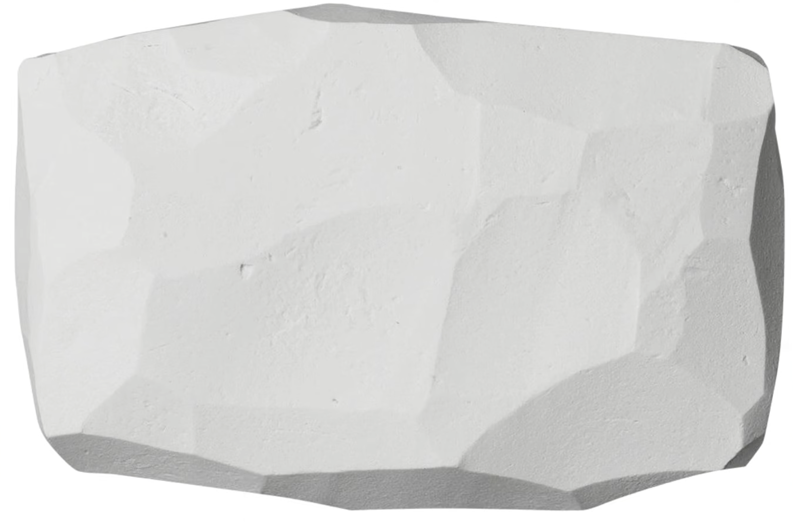
< 스컬피로 깎아 만든 에센스 원형 >
이를 해결하기 위해 디자인팀은 스컬피로 깎은 듯한 느낌의 핵심 질감 하나를 "에센스"로 추출했습니다. 여기에 브랜드 컬러와 명도 대비를 입히면 아래와 같이 다양한 스타일 참조용 에센스가 만들어집니다.
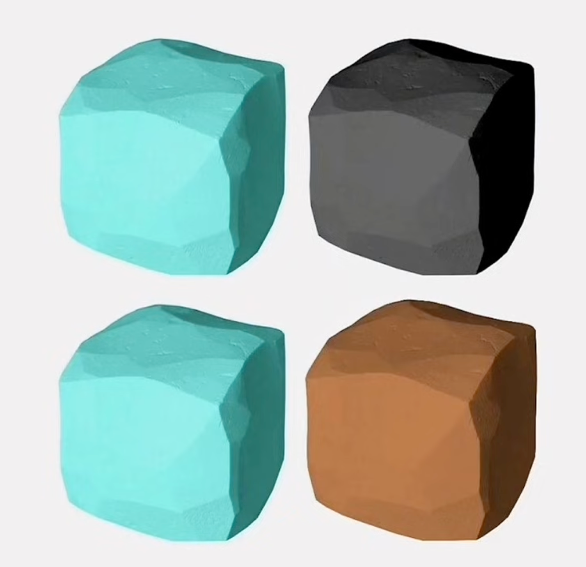
< 컬러를 입힌 에센스 변형 >
이 에센스를 Adobe Firefly 등 AI 이미지 생성 도구의 스타일 참조에 넣고, "오토바이 그려줘" 한 문장만 입력하면 배달의민족 스타일의 오토바이가 바로 나오는 시스템을 구축한 것입니다.
이 방식의 핵심은 다음 세 가지입니다.
- 에센스 추출 — 브랜드의 시각적 본질을 군더더기 없이 하나의 이미지로 압축합니다. 컬러, 질감, 명도 대비 등 핵심 요소만 남깁니다.
- AI 스타일 참조 — 추출한 에센스를 AI 도구의 스타일 레퍼런스로 넣습니다. 프롬프트는 "바나나 그려줘" 수준으로 짧아도 일관된 결과가 나옵니다.
- 대량 생산 가능 — 인턴이든 신입이든 이 에센스를 넣고 AI를 돌리면 2~3년차와 비슷한 수준의 결과물을 만들어낼 수 있습니다.
SPEC 디자인팀 역시 우리만의 에센스를 선정하여 모든 시각물에 적용할 예정입니다. 이를 통해 누가 만들어도 "SPEC 스타일"이라는 일관된 정체성을 유지할 수 있습니다.
아래는 미리 만들어둔 SPEC 에센스 모음입니다. 원본 파일은 피그마에 들어있으며, 이 에센스들을 AI 도구의 스타일 참조에 넣어 테스트해볼 수 있습니다.
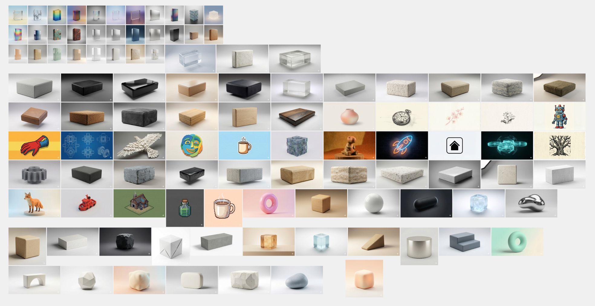
< SPEC 에센스 모음 1 >
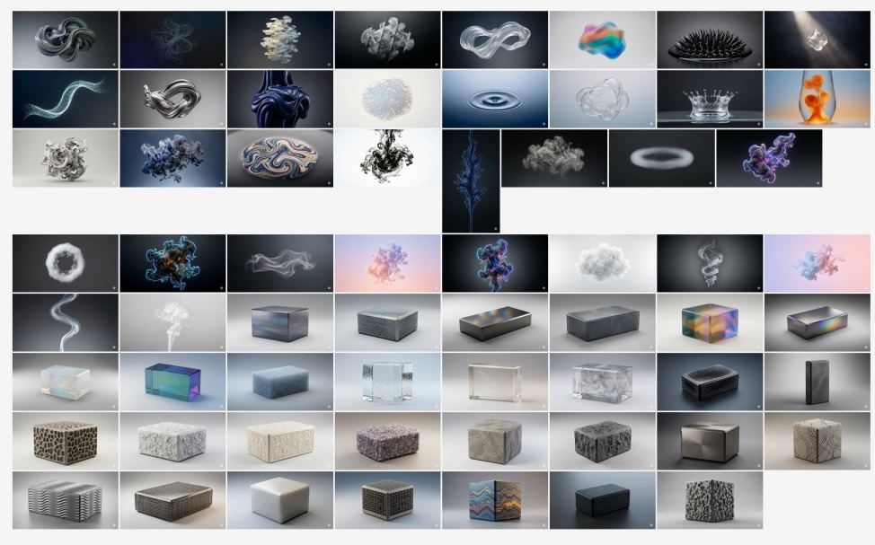
< SPEC 에센스 모음 2 >
SPEC 기반 색상
모든 디자인 결과물에 사용되는 SPEC의 공식 색상 팔레트입니다.
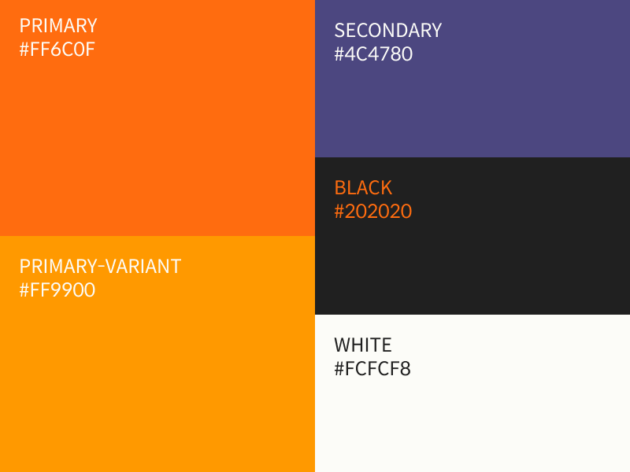
< SPEC 색상 팔레트 >
| 용도 |
색상명 |
코드 |
| Primary |
오렌지 |
#FF6C0F |
| Primary Variant |
옐로우 오렌지 |
#FF9900 |
| Secondary |
퍼플 |
#4C4780 |
| Black |
블랙 |
#202020 |
| White |
화이트 |
#FCFCF8 |
Primary(오렌지)가 SPEC의 메인 컬러이며, 강조가 필요한 경우 Primary Variant를 사용합니다. Secondary(퍼플)는 보조 색상으로 활용됩니다.
방향성
본 팀은 다음 세 가지 방향으로 운영됩니다.
AI 도구 적극 활용 — 디자인 비전공자도 AI 도구를 활용하여 실무급 결과물을 제작할 수 있습니다. 다양한 AI 디자인 도구를 실험하고, 효과적인 것은 팀의 표준 워크플로우로 채택합니다.
원칙 기반 디자인 — 감각에 의존하지 않고 검증된 디자인 원칙(CRAP, 시각적 위계, 색상 이론 등)을 기반으로 작업합니다. 원칙을 알면 AI 도구에 더 정확한 지시를 내릴 수 있습니다.
실전 중심 — 실제로 만들어야 하는 상황이 오면, 모든 팀원이 각자 포스터를 1개 이상 제작해 옵니다. 이후 함께 피드백을 주고받으며 개선하는 과정을 반복합니다.
Chapter 0. 왜 디자인을 알아야 하는가?
2026. 03. 18 · 작성자-ownuun
SPEC 4기 디자인팀 전용 교육자료입니다. 본 자료는 디자인을 전공하지 않은 분이 실무에서 쓸 수 있는 수준까지 빠르게 올라가기 위해 제작되었습니다. 이론보다 감각, 감각보다 원칙. 원칙을 알면 AI 도구도 제대로 활용하실 수 있습니다.
이 챕터에서 배우실 내용은 다음과 같습니다.
- 디자인 원칙에 이름을 붙이는 것이 왜 중요한가
- "감각"이라는 말의 실체
- AI 시대에 디자인 원칙이 더욱 중요해지는 이유
성균관대 게시판에 붙어 있는 동아리 모집 포스터를 떠올려보시기 바랍니다. 그 중에서 기억에 남는 것이 있으십니까?
아마 없을 것입니다. 대부분의 포스터는 보는 순간 뇌에서 삭제됩니다. 다만 가끔 "어, 이거 뭐지?" 하고 발걸음을 멈추게 만드는 포스터가 있습니다. 그 차이가 무엇인지 알면, 본 자료를 읽을 이유가 생깁니다.
원칙 0-1. 이름의 법칙
이름을 붙이면 보이기 시작합니다.
로빈 윌리엄스(Robin Williams)라는 디자이너가 쓴 책에 이런 이야기가 나옵니다.
"나는 조슈아 트리를 평생 봐왔지만, 그게 조슈아 트리인 줄 몰랐다. 누군가 이름을 알려준 날, 갑자기 그 나무가 어디에나 보이기 시작했다."
조슈아 트리(Joshua Tree)는 미국 캘리포니아 사막에 자라는 독특하게 생긴 나무입니다. 한번 이름을 알고 나면 어디서든 눈에 띄게 됩니다. 그 전까지는 그냥 "이상하게 생긴 나무" 중 하나였을 뿐입니다.
디자인도 마찬가지입니다. "대비(Contrast)", "정렬(Alignment)", "여백(White Space)" 같은 개념에 이름을 붙이는 순간, 갑자기 세상이 달라 보입니다. 카페 메뉴판을 보면서 "아, 이거 정렬이 엉망이네"가 보이고, 잘 만든 포스터를 보면서 "여기서 대비를 이렇게 썼구나"가 읽히기 시작합니다.
본 자료의 목적은 딱 하나입니다. 디자인 원칙에 이름을 붙여드리는 것입니다.
이름을 알면 보이고, 보이면 만들 수 있습니다.
원칙 0-2. 기초의 법칙
17년차 디자인 업계 종사자에게 이런 말을 들은 적이 있습니다.
"메시지 전달, 의도 전달이 중요하다고 하는데, 그건 예쁘다는 게 기본으로 깔려 있는 상태의 얘기다. 예쁘게 만드는 건 기본적으로 갖추고 있어야 한다."
이 말이 처음엔 다소 충격적으로 들리실 수 있습니다. "디자인은 예쁜 게 전부가 아니잖아요?" 맞습니다. 하지만 그 말은 이미 예쁜 것을 전제로 한 이야기입니다.
축구로 비유하면 이렇습니다. "축구는 체력만이 전부가 아니야, 전술이 중요해"라는 말은 기본 체력이 있는 사람에게 하는 말입니다. 체력이 없으면 전술을 쓸 기회조차 없기 때문입니다. 디자인도 마찬가지입니다. 시각적으로 기본 이상은 되어야 메시지가 전달됩니다. 못생긴 포스터는 아무도 읽지 않습니다. 읽히지 않는 포스터는 아무리 좋은 메시지를 담아도 의미가 없습니다.
그래서 우리는 "예쁘게 만드는 법"부터 배웁니다. 이것이 기초입니다.
원칙 0-3. 훈련의 법칙
"저는 감각이 없어서요..."
디자인 얘기만 나오면 이런 말씀을 하시는 분이 꼭 있습니다. 솔직히 말씀드리면, 이건 핑계에 가깝습니다.
같은 17년차 디자이너의 말을 다시 빌리면:
"감각이 중요하다? 옛말이다. 보기 좋은 것들은 굉장히 많은 훈련을 통해서 만들어진다. 많이 그리고 많이 만들고. 감각이 뛰어나지 않으면 디자인할 수 없다? 헛말이다."
감각처럼 보이는 것들의 정체는 대부분 반복 훈련으로 쌓인 패턴 인식입니다. 좋은 디자인을 많이 보고, 많이 따라 만들고, 많이 실패하면서 눈이 높아집니다. 타고난 것이 아니라 쌓인 것입니다.
물론 타고난 감각이 있으면 더 빠르게 올라갑니다. 하지만 없어도 괜찮습니다. 원칙을 알고 훈련하면 충분히 실무 수준에 도달하실 수 있습니다. 본 자료가 그 훈련의 시작점입니다.
또 하나의 흔한 오해가 있습니다. "디자인은 그림을 잘 그려야 하는 거 아닌가요?" 실무 현장 이야기를 들어보면, 10명 중 2명은 비전공자였다고 합니다. 그림을 잘 못 그려도 디자인을 잘 하시는 분이 분명히 있습니다. 지금 우리가 만드는 것은 포스터, 배너, 카드뉴스, PPT입니다. 이것을 만드는 데 손으로 그림을 그리는 능력은 거의 필요하지 않습니다. 필요한 것은 구성하는 능력, 즉 어떤 요소를 어디에 어떻게 배치할지 판단하는 능력입니다. 그리고 그 판단 능력은 원칙에서 나옵니다.
원칙 0-4. AI 시대의 법칙
"AI가 다 해주는데 굳이 원칙을 배워야 하나요?"
이 질문, 충분히 이해합니다. 다만 함께 생각해보시기 바랍니다.
AI는 효율적인 결과물을 뽑아냅니다. 프롬프트를 넣으면 그럴듯한 포스터가 나옵니다. 빠르고 편합니다. 다만 AI가 만든 결과물은 대부분 "무난합니다". 기억에 남지 않습니다. 디자이너의 역할이 바뀌고 있습니다. AI가 효율적인 결과물을 뽑을 때, 사람은 가장 잊혀지지 않는 순간을 설계해야 합니다. AI 시대의 키워드는 사람, 교감, 맥락입니다.
AI에게 "좋은 포스터 만들어줘"라고 하면 평균적인 포스터가 나옵니다. 하지만 "SPEC 4기 리크루팅 포스터인데, 타겟은 성균관대 공대생이고, 우리 팀의 분위기는 이렇고, 이 감정을 전달하고 싶어"라고 하면 훨씬 다른 결과가 나옵니다. 그 차이를 만드는 것이 디자인 원칙을 아는 사람입니다. 원칙을 알아야 AI에게 제대로 된 지시를 내릴 수 있고, AI가 뽑은 결과물이 좋은지 나쁜지 판단할 수 있습니다.
원칙 없이 AI를 쓰면 그냥 운에 맡기는 것입니다.
본 자료의 사용법
본 자료는 두 파트로 나뉩니다.
Part 1 (지금 읽고 계신 본 자료) 은 원칙을 다룹니다. 레이아웃, 색상, 타이포그래피, 시각적 위계. 도구 없이도 이해하실 수 있는 내용들입니다. 읽으면서 "아, 이래서 그게 예뻐 보였구나"가 나와야 합니다.
Part 2 는 AI 도구로 가속하는 방법을 다룹니다. Pencil Dev, Figma, Canva, 나노바나나. Part 1의 원칙을 알고 쓰면 결과물이 완전히 달라집니다.
순서가 중요합니다. 원칙 먼저, 도구 나중입니다.
자, 시작하겠습니다.
한 줄 요약
이름을 붙이면 보이고, 보이면 만들 수 있습니다. 감각은 타고나는 것이 아니라 쌓이는 것입니다.
Chapter 1. 레이아웃의 4원칙 — C.R.A.P.
2026. 03. 18 · 작성자-ownuun
이 챕터에서 배우실 내용은 다음과 같습니다.
- 대비(Contrast): 다르게 만들려면 확실하게 다르게 만드는 법
- 반복(Repetition): 통일감과 신뢰감을 만드는 법
- 정렬(Alignment): 모든 요소를 보이지 않는 선에 맞추는 법
- 근접(Proximity): 관련 있는 정보를 그룹으로 묶는 법
이 원칙을 모르면 디자인이 진짜 쓰레기가 됩니다. 그래서 이름도 쓰레기입니다.
C.R.A.P. 맞습니다, 영어로 쓰레기라는 뜻입니다. 로빈 윌리엄스가 일부러 이렇게 이름 붙였습니다. 기억하기 쉽게. 그리고 솔직히, 이 원칙을 모르면 디자인이 진짜 쓰레기가 되기도 하기 때문입니다.
이 네 가지가 레이아웃의 전부입니다. 과장이 아닙니다. 이 네 가지만 제대로 지켜도 "어, 이거 꽤 잘 만들었는데?"라는 말을 들으실 수 있습니다. 하나씩 살펴보겠습니다.
원칙 1. 대비의 법칙 (Contrast)
대비의 원칙은 간단합니다. 다르게 만들려면 확실하게 다르게 만들어야 합니다.
비슷하게 만드는 것이 가장 위험합니다. 제목이랑 본문이 비슷한 크기면 어디가 제목인지 알 수 없습니다. 강조하고 싶은 단어가 주변 텍스트랑 비슷한 굵기면 강조가 되지 않습니다. 중요한 버튼이 배경이랑 비슷한 색이면 아무도 누르지 않습니다. 중간 지점은 오히려 혼란을 야기합니다.
대비를 만드는 방법은 다음과 같이 다섯 가지입니다.
| 요소 |
대비 방법 |
| 글자 크기 |
제목은 본문의 2~3배 이상 |
| 굵기 |
Bold vs Regular, 확실하게 차이 내기 |
| 색상 |
밝은 배경에 어두운 글자, 또는 반대 |
| 형태 |
둥근 것 vs 각진 것 |
| 공간 |
빽빽한 영역 vs 여백이 많은 영역 |
초보자가 가장 많이 하는 실수는 "조금 크게" 하는 것입니다. 제목을 본문보다 조금만 크게 만들면 어정쩡해집니다. 차이가 있긴 한데 확실하지 않아서 오히려 어색하게 됩니다. 대비는 과감하게 해야 합니다. 제목이 본문보다 1.2배 크면 대비가 아닙니다. 2배, 3배는 되어야 합니다.
실전 예시
[Before ❌] 동아리 모집 포스터
SPEC 4기 디자인팀 모집
함께 성장할 팀원을 찾습니다
모집 기간: 3월 10일 ~ 3월 20일
지원 방법: 구글폼 작성
문의: @spec_design
모든 텍스트가 비슷한 크기, 비슷한 굵기입니다. 어디를 먼저 봐야 할지 모르고, 눈이 갈 곳을 찾지 못합니다.
[After ✅] 대비를 적용한 포스터
SPEC 4기 디자인팀 모집 ← 3배 크게, Bold
─────────────────────
함께 성장할 팀원을 찾습니다 ← 중간 크기, 색상 다르게
모집 기간 3월 10일 ~ 3월 20일 ← 작게, 회색
지원 방법 구글폼 작성
문의 @spec_design
제목이 압도적으로 큽니다. 눈이 자연스럽게 제목 → 부제 → 세부사항 순서로 이동합니다.
[Before ❌] 팀플 발표자료 슬라이드
슬라이드 제목이 본문 텍스트랑 폰트 크기 차이가 4pt밖에 나지 않습니다. 제목이 18pt, 본문이 14pt. 어디가 제목인지 한눈에 들어오지 않습니다.
[After ✅] 대비 적용
제목 28pt Bold, 본문 14pt Regular. 두 배 차이입니다. 이제 슬라이드를 멀리서 봐도 구조가 보입니다.
체크 포인트
"이 디자인에서 가장 중요한 정보가 한눈에 보이는가?"
"비슷해 보이는 요소들이 있다면, 의도한 건가 아니면 실수인가?"
원칙 2. 반복의 법칙 (Repetition)
반복은 같은 시각 요소를 여러 곳에서 반복해서 통일감을 만드는 것입니다.
같은 색, 같은 폰트, 같은 아이콘 스타일, 같은 선 굵기. 이것들이 반복되면 "이건 하나의 시리즈구나", "이건 같은 브랜드구나"라는 느낌이 생깁니다. 반복이 없으면 어떻게 될까요? 매 페이지마다 다른 폰트, 다른 색, 다른 스타일. 보는 사람이 혼란스러워집니다. 뭔가 정신없고 아마추어 같아 보이게 됩니다.
반복이 만드는 것은 세 가지입니다.
- 통일감 — 여러 요소가 하나처럼 보입니다.
- 신뢰감 — 일관성 있는 디자인은 전문적으로 보입니다.
- 브랜드 인식 — 반복되는 요소가 곧 브랜드가 됩니다.
실전 예시
[Before ❌] 인스타 카드뉴스 시리즈
1장: 파란 배경, 나눔고딕 폰트, 원형 아이콘
2장: 흰 배경, 맑은고딕 폰트, 사각형 아이콘
3장: 노란 배경, 고딕 폰트, 아이콘 없음
이것이 같은 시리즈라고 해도 보는 사람은 알 수 없습니다. 그냥 따로따로 만든 것처럼 보입니다.
[After ✅] 반복 원칙 적용
모든 장에서 다음 요소를 통일합니다.
- 배경색: 항상 흰색 + 포인트 컬러(SPEC 브랜드 컬러)
- 폰트: 제목은 항상 Pretendard Bold, 본문은 항상 Pretendard Regular
- 로고: 항상 오른쪽 하단 같은 위치
- 색상 바: 항상 상단에 같은 두께로
이제 1장만 봐도 "아, SPEC 카드뉴스구나"가 보입니다.
[Before ❌] PPT 발표자료
슬라이드마다 제목 위치가 다르고, 강조 색상이 파란색이었다가 빨간색이었다가 초록색이었다가 합니다. 폰트도 슬라이드마다 다릅니다.
[After ✅] 반복 적용
- 제목: 항상 왼쪽 상단, 항상 같은 폰트와 크기
- 강조 색상: 전체에서 딱 하나만 (예: 파란색)
- 구분선: 항상 같은 두께, 같은 색
발표자료가 하나의 덩어리처럼 보입니다.
반복의 함정
반복이 좋다고 해서 모든 것을 똑같이 만들면 지루해집니다. 반복은 핵심 요소에 적용하고, 나머지는 변화를 주어야 합니다. 폰트와 색상은 반복하되, 이미지와 레이아웃은 변화를 주는 것이 균형입니다.
체크 포인트
"이 디자인에서 반복되는 요소가 있는가?"
"시리즈물이라면, 한 장만 봐도 같은 시리즈인 걸 알 수 있는가?"
원칙 3. 정렬의 법칙 (Alignment)
정렬의 원칙은 이것입니다. 모든 요소는 다른 요소와 시각적 연결이 있어야 합니다.
아무 데나 놓으면 안 됩니다. 텍스트, 이미지, 아이콘, 선 — 모든 것이 보이지 않는 선에 맞춰 정렬되어야 합니다. 정렬이 잘 된 디자인은 "깔끔하다"는 느낌을 줍니다. 정렬이 안 된 디자인은 "뭔가 어수선하다"는 느낌을 줍니다. 다만 대부분의 사람들은 왜 어수선한지 정확히 알지 못합니다. 그냥 느낌으로 압니다.
초보자가 가장 많이 하는 실수가 모든 걸 가운데 정렬하는 것입니다. 가운데 정렬이 나쁜 것은 아닙니다. 하지만 모든 텍스트를 가운데 정렬하면 각 줄의 시작점이 달라집니다. 눈이 다음 줄을 찾을 때마다 위치를 새로 파악해야 해서 읽기 불편합니다.
좌측 정렬은 모든 줄의 시작점이 같습니다. 눈이 자연스럽게 흐릅니다. 그래서 본문 텍스트는 대부분 좌측 정렬이 더 읽기 편합니다. 가운데 정렬은 제목, 짧은 문구, 대칭이 중요한 레이아웃에 사용합니다. 긴 본문에는 피하시는 것을 권해드립니다.
실전 예시
[Before ❌] 포스터 텍스트 배치
SPEC 4기 모집
함께 성장할 팀원을 찾습니다
모집 기간: 3월 10일
지원: 구글폼
모든 줄이 가운데 정렬입니다. 각 줄의 시작점이 다 달라서 어수선합니다.
[After ✅] 좌측 정렬 적용
SPEC 4기 모집
함께 성장할 팀원을 찾습니다
모집 기간 3월 10일
지원 구글폼
모든 줄이 왼쪽 선에 맞춰 정렬됩니다. 깔끔합니다.
[Before ❌] 슬라이드 요소 배치
이미지는 왼쪽에서 30px 들어가 있고, 텍스트는 왼쪽에서 45px 들어가 있고, 제목은 왼쪽에서 20px 들어가 있습니다. 다 조금씩 달라서 보이지 않는 선이 세 개입니다.
[After ✅] 정렬선 통일
이미지, 텍스트, 제목 모두 왼쪽에서 40px. 보이지 않는 선이 하나입니다. 깔끔합니다.
정렬선 찾기 연습
좋은 디자인을 보면서 "보이지 않는 선이 어디에 있을까?"를 찾아보시는 연습을 권해드립니다. 잘 만든 포스터나 잡지 레이아웃을 보면 요소들이 몇 개의 선에 맞춰 정렬되어 있다는 것을 발견하실 수 있습니다.
체크 포인트
"이 디자인에서 보이지 않는 정렬선이 몇 개인가? 적을수록 좋다."
"임의로 배치된 요소가 있는가? 있다면 어느 선에 맞출 수 있을까?"
원칙 4. 근접의 법칙 (Proximity)
근접의 원칙은 관련 있는 요소는 가까이 묶고, 관련 없는 요소는 떨어뜨리는 것입니다.
사람의 눈은 가까이 있는 것들을 자동으로 "같은 그룹"으로 인식합니다. 이것을 이용하면 정보를 그룹으로 묶어서 한눈에 파악하기 쉽게 만들 수 있습니다.
포스터에 이런 정보가 있다고 가정해보겠습니다. 행사 이름, 날짜, 시간, 장소, 주최, 문의처, 참가비. 이것을 그냥 나열하면 7개의 정보가 흩어집니다. 보는 사람이 "언제 어디서 하는 거지?"를 파악하려면 전체를 다 읽어야 합니다.
근접 원칙을 적용하면 다음과 같이 그룹핑할 수 있습니다.
- [그룹 1] 행사 정보: 날짜 / 시간 / 장소
- [그룹 2] 참가 정보: 참가비 / 문의처
- [그룹 3] 주최: 주최
이렇게 묶으면 "언제 어디서"는 그룹 1만 보면 됩니다. 정보 파악이 훨씬 빨라집니다.
실전 예시
[Before ❌] 동아리 모집 포스터
SPEC 4기 디자인팀 모집
함께 성장할 팀원을 찾습니다
모집 기간: 3월 10일 ~ 3월 20일
지원 방법: 구글폼 작성
문의: @spec_design
주최: SPEC 창업동아리
모든 항목이 같은 간격으로 나열되어 있습니다. 어떤 것이 관련 있는지 알기 어렵습니다.
[After ✅] 근접 원칙 적용
SPEC 4기 디자인팀 모집
함께 성장할 팀원을 찾습니다
[큰 여백]
모집 기간 3월 10일 ~ 3월 20일
지원 방법 구글폼 작성
문의 @spec_design
[큰 여백]
주최 SPEC 창업동아리
"모집 기간 / 지원 방법 / 문의"가 하나의 그룹으로 묶였습니다. 지원하려는 분이 필요한 정보를 한 곳에서 찾으실 수 있습니다.
[Before ❌] 카드뉴스 레이아웃
이미지와 그 이미지에 대한 설명 텍스트가 멀리 떨어져 있습니다. 어떤 텍스트가 어떤 이미지 설명인지 알기 어렵습니다.
[After ✅] 근접 적용
이미지 바로 아래에 설명 텍스트. 이미지와 설명이 하나의 그룹으로 인식됩니다.
여백도 정보입니다
근접 원칙에서 중요한 것은 그룹 사이의 여백입니다. 그룹 안의 요소들은 가까이, 그룹 사이는 멀리. 이 차이가 클수록 그룹핑이 명확해집니다. 여백이 없으면 그룹이 없는 것입니다. 모든 것이 하나의 덩어리처럼 보입니다.
체크 포인트
"관련 있는 정보들이 가까이 묶여 있는가?"
"그룹과 그룹 사이에 충분한 여백이 있는가?"
Chapter 2. 시각적 위계와 구도
2026. 03. 18 · 작성자-ownuun
이 챕터에서 배우실 내용은 다음과 같습니다.
- 시각적 위계를 만드는 네 가지 도구 (크기, 굵기, 색상 대비, 위치)
- 눈이 움직이는 방향 — Z패턴과 F패턴
- 여백의 실제 효과와 활용법
- 그리드 시스템의 개념
- 구도 기본 3가지 (삼분할, 중앙 배치, 대각선)
사람들이 포스터를 보는 시간은 평균 3초입니다. 3초 안에 "이게 뭔지"가 전달되지 않으면 그냥 지나칩니다. 그 3초를 설계하는 것이 시각적 위계입니다.
원칙 5. 시각적 위계의 법칙 (Visual Hierarchy)
포스터를 볼 때 우리 눈은 어떻게 움직일까요?
모든 것을 동시에 보는 것 같지만, 실제로는 그렇지 않습니다. 눈은 항상 어딘가에서 시작해서 순서대로 이동합니다. 그 순서를 시각적 위계(Visual Hierarchy) 라고 합니다.
잘 만든 디자인은 이 순서를 설계합니다. "이걸 먼저 보고, 그 다음 이걸 보고, 마지막에 이걸 봅니다." 보는 사람이 의식하지 못하는 사이에 디자이너가 정해놓은 순서대로 정보를 받아들이게 됩니다. 못 만든 디자인은 이 순서가 없습니다. 눈이 어디서 시작해야 할지 모르고, 결국 아무것도 제대로 읽히지 않습니다.
위계를 만드는 도구는 네 가지입니다.
5-1. 크기 (Scale)
가장 직관적인 방법입니다. 크면 먼저 보입니다.
제목이 본문보다 크면 제목이 먼저 보입니다. 강조하고 싶은 숫자를 크게 만들면 그 숫자가 먼저 보입니다. 크기로 위계를 만드는 것은 가장 쉽고 효과적인 방법입니다.
[1순위] SPEC 4기 리크루팅 ← 가장 크게
[2순위] 함께 만들어가는 팀 ← 중간 크기
[3순위] 3월 10일 ~ 3월 20일 ← 작게
5-2. 굵기 (Weight)
같은 크기라도 굵은 글자가 먼저 보입니다. Bold vs Regular의 차이입니다.
본문 중에서 특정 단어를 강조하고 싶을 때 크기를 키우기 어렵다면 굵기를 바꾸는 것이 효과적입니다. "이 부분이 중요하다"처럼요.
5-3. 색상 대비 (Color Contrast)
주변과 색상 대비가 강한 요소가 먼저 보입니다. 흰 배경에 검은 글자, 어두운 배경에 밝은 글자. 또는 무채색 배경에 유채색 포인트.
명품 광고에서 흰 배경에 검은 로고만 있는 이유가 있습니다. 대비가 강하면 강할수록 눈에 먼저 들어오기 때문입니다.
5-4. 위치 (Position)
사람의 눈은 왼쪽 위에서 시작하는 경향이 있습니다. 그래서 가장 중요한 정보는 왼쪽 위나 중앙 상단에 배치하는 것이 일반적입니다. 하지만 이것은 절대 법칙이 아닙니다. 의도적으로 다른 위치에 배치해서 시선을 끌 수도 있습니다.
위계 설계 실전 예시
[Before ❌] 위계 없는 포스터
SPEC 4기 디자인팀 모집 (20pt)
함께 성장할 팀원을 찾습니다 (18pt)
모집 기간: 3월 10일 ~ 3월 20일 (16pt)
지원 방법: 구글폼 작성 (16pt)
문의: @spec_design (16pt)
크기 차이가 거의 없습니다. 어디서 시작해야 할지 모르고 눈이 헤맵니다.
[After ✅] 3단계 위계 설계
SPEC 4기 디자인팀 모집 (48pt, Bold) ← 1순위: 가장 먼저 보임
함께 성장할 팀원을 찾습니다 (24pt) ← 2순위: 그 다음
모집 기간 3월 10일 ~ 3월 20일 (14pt) ← 3순위: 마지막으로
지원 방법 구글폼 작성 (14pt)
문의 @spec_design (14pt)
눈이 자연스럽게 1순위 → 2순위 → 3순위로 이동합니다.
원칙 6. 시선 흐름의 법칙 — Z패턴과 F패턴
눈이 움직이는 방향에는 패턴이 있습니다. 이 패턴을 알면 어디에 무엇을 배치해야 할지 알 수 있습니다.
6-1. Z패턴 — 포스터, 배너에서
포스터나 배너처럼 짧은 시간에 훑어보는 콘텐츠에서 눈은 Z자 모양으로 움직입니다.
┌─────────────────────────────┐
│ ① 왼쪽 위 ──────── ② 오른쪽 위 │
│ ↘ │
│ ↘ │
│ ↘ │
│ ③ 왼쪽 아래 ──── ④ 오른쪽 아래 │
└─────────────────────────────┘
① 왼쪽 위에서 시작 → ② 오른쪽 위로 이동 → ③ 왼쪽 아래로 대각선 이동 → ④ 오른쪽 아래로 이동
이 패턴을 알면 각 위치에 무엇을 배치해야 할지 결정할 수 있습니다.
- ① 왼쪽 위: 로고, 브랜드명 (가장 먼저 보임)
- ② 오른쪽 위: 날짜, 태그라인
- ③ 왼쪽 아래: 핵심 메시지, CTA (Call to Action)
- ④ 오른쪽 아래: 연락처, QR코드
실전 적용 — 동아리 모집 포스터:
┌─────────────────────────────┐
│ SPEC 로고 3월 모집 │
│ │
│ SPEC 4기 디자인팀 │
│ 모집합니다 │
│ │
│ 지원하기 → QR코드 │
└─────────────────────────────┘
6-2. F패턴 — 웹페이지, 긴 글에서
웹페이지나 긴 텍스트를 읽을 때 눈은 F자 모양으로 움직입니다.
┌─────────────────────────────┐
│ ━━━━━━━━━━━━━━━━━━━━━━━━━━ │ ← 첫 줄은 끝까지 읽음
│ ━━━━━━━━━━━━━━━━━━━━ │ ← 두 번째 줄은 조금 덜 읽음
│ ━━━━━━━━━━━━ │ ← 점점 덜 읽음
│ ━━━━━━━ │
│ ━━━━ │
│ ━━ │
└─────────────────────────────┘
왼쪽 세로 방향으로 훑으면서, 흥미로운 부분에서 가로로 읽습니다. 오른쪽으로 갈수록 읽히지 않습니다.
이것이 중요한 이유는, 중요한 정보는 왼쪽에 배치해야 한다는 뜻이기 때문입니다. 오른쪽에 중요한 정보를 넣으면 읽히지 않을 수 있습니다. 카드뉴스나 SNS 홍보물에서도 마찬가지입니다. 핵심 메시지는 왼쪽 또는 상단에 배치하시는 것이 좋습니다.
원칙 7. 여백의 법칙 (White Space)
여백은 "아무것도 없는 공간"이 아닙니다. 여백은 디자인에서 가장 강력한 도구 중 하나입니다.
초보 디자이너일수록 빈 공간을 채우려는 경향이 있습니다. 포스터에 빈 곳이 보이면 텍스트를 넣고, 이미지를 넣고, 장식을 넣습니다. 그러나 이것은 디자인의 완성도를 오히려 떨어뜨리는 행위입니다.
명품 브랜드의 광고를 떠올려보십시오. 루이비통, 샤넬, 에르메스의 광고는 화면의 80% 이상이 여백입니다. 제품 하나와 브랜드 로고만 놓여 있을 뿐입니다. 이 여백이 "고급스러움"이라는 감정을 만들어냅니다. 빽빽하게 채운 디자인은 저렴해 보입니다. 여백이 많은 디자인은 자신감 있어 보입니다. "우리 제품은 이것 하나로 충분하다"는 메시지입니다.
반대로 전단지를 생각해보시기 바랍니다. 빽빽하게 채워진 텍스트, 형광색 강조, 여백 없음. 이것이 전단지 느낌입니다.
정리하자면, 여백의 법칙은 다음과 같습니다.
- 빈 공간은 채워야 할 대상이 아니라, 의도적으로 설계해야 할 요소입니다.
- 여백이 많을수록 핵심 메시지에 시선이 집중됩니다.
- 텍스트 주변에 여백이 있으면 읽기 편합니다.
- 고급스러운 디자인일수록 여백의 비율이 높습니다.
실전 적용
[Before ❌] 여백 없는 카드뉴스
텍스트가 카드 가장자리까지 꽉 차 있습니다. 이미지와 텍스트 사이에 공간이 없어서 답답합니다.
[After ✅] 여백 적용
카드 가장자리에서 최소 20~30px 안쪽에서 시작. 이미지와 텍스트 사이에 16px 이상 여백. 숨이 쉬어집니다.
팁: 여백이 부족하다 싶으면 텍스트를 줄여보시기 바랍니다. 정보를 줄이는 것이 더 좋은 디자인입니다.
원칙 8. 그리드의 법칙 (Grid System)
그리드는 보이지 않는 격자선입니다. 모든 요소가 이 선에 맞춰 정렬됩니다.
신문을 생각해보시기 바랍니다. 기사들이 칸칸이 나뉘어 있습니다. 그 칸이 그리드입니다. 보이지 않는 선이 있어서 모든 기사가 그 선에 맞춰 배치됩니다. 그리드가 있으면 정렬이 자동으로 되고, 일관성이 생기며, 레이아웃 결정이 빨라집니다.
자주 쓰는 그리드는 두 가지입니다.
인스타 카드뉴스 — 3단 그리드
┌───┬───┬───┐
│ │ │ │
│ │ │ │
│ │ │ │
└───┴───┴───┘
카드를 세로로 3등분합니다. 텍스트는 12단, 이미지는 23단 이런 식으로 배치합니다.
PPT 발표자료 — 12단 그리드
┌─┬─┬─┬─┬─┬─┬─┬─┬─┬─┬─┬─┐
│ │ │ │ │ │ │ │ │ │ │ │ │
└─┴─┴─┴─┴─┴─┴─┴─┴─┴─┴─┴─┘
12단으로 나누면 2단, 3단, 4단, 6단 레이아웃을 자유롭게 조합하실 수 있습니다.
Figma에서 프레임을 선택하고 오른쪽 패널에서 "Layout Grid"를 추가하면 됩니다. 컬럼 수와 간격을 설정하면 보이지 않는 선이 생깁니다. 이 선에 맞춰 요소를 배치하면 자동으로 정렬됩니다. (도구 사용법은 Part 2에서 자세히 다룹니다. 여기서는 개념만 다룹니다.)
원칙 9. 구도의 법칙 (Composition)
구도는 요소들을 어떻게 배치할 것인가의 문제입니다. 사진 찍을 때도 구도를 잡듯이, 디자인에서도 구도가 있습니다. 구도는 크게 세 가지로 나뉩니다.
9-1. 삼분할 법칙 (Rule of Thirds)
화면을 가로 3등분, 세로 3등분해서 9개의 칸을 만듭니다. 그 선들이 교차하는 4개의 점이 시선이 자연스럽게 가는 위치입니다.
┌───┬───┬───┐
│ │ │ │
├───┼───┼───┤ ← 교차점 4개가 핵심 위치
│ │ ✦ │ ✦ │
├───┼───┼───┤
│ │ ✦ │ ✦ │
└───┴───┴───┘
주인공 요소(제목, 핵심 이미지)를 이 교차점 근처에 배치하면 자연스럽고 안정적인 구도가 됩니다.
실전 적용 — 포스터: 제목 텍스트를 왼쪽 상단 교차점에, 핵심 이미지를 오른쪽 하단 교차점에 배치해보시기 바랍니다. 대각선으로 균형이 잡힙니다.
9-2. 중앙 배치 (대칭의 힘)
모든 요소를 정중앙에 배치하는 구도입니다. 대칭이 주는 안정감과 권위감이 있습니다.
┌─────────────────────────────┐
│ │
│ [로고/이미지] │
│ │
│ 핵심 메시지 │
│ │
│ 부제목 │
│ │
└─────────────────────────────┘
명품 브랜드, 공식 행사 포스터, 졸업식 초대장 같은 데서 많이 사용합니다. 격식 있고 안정적인 느낌입니다. 단점은 지루해 보일 수 있다는 것입니다. 역동적인 느낌이 필요하면 다른 구도를 사용하시기 바랍니다.
실전 적용 — 공식 행사 포스터: SPEC 창립 기념 행사, 데모데이 포스터 같은 격식 있는 자리에 어울립니다.
9-3. 대각선 구도 (다이나믹한 느낌)
요소들을 대각선 방향으로 배치하는 구도입니다. 움직임과 에너지가 느껴집니다.
┌─────────────────────────────┐
│ [요소 A] │
│ ↘ │
│ [요소 B] │
│ ↘ │
│ [요소 C] │
└─────────────────────────────┘
스포츠, 게임, 에너지 드링크 광고에서 많이 보이는 구도입니다. 역동적이고 젊은 느낌입니다.
실전 적용 — 리크루팅 포스터: "우리 팀은 활동적이고 역동적이다"는 이미지를 주고 싶을 때 적용해보시기 바랍니다. 텍스트와 이미지를 대각선으로 배치하면 됩니다.
구도 선택 가이드
| 상황 |
추천 구도 |
이유 |
| 공식 행사, 격식 있는 자리 |
중앙 배치 |
안정감, 권위감 |
| 일반 홍보 포스터 |
삼분할 법칙 |
자연스럽고 균형 잡힘 |
| 역동적인 이미지 필요 |
대각선 구도 |
에너지, 움직임 |
| 카드뉴스, 정보 전달 |
그리드 기반 |
가독성, 일관성 |
Part 1을 마치며
Chapter 0에서 2까지 읽으셨다면 이제 디자인을 보는 눈이 조금 달라지셨을 것입니다.
카페 메뉴판을 보면서 "정렬이 엉망이네"가 보이고, 잘 만든 포스터를 보면서 "여기서 대비를 이렇게 썼구나"가 읽히기 시작하셨다면 성공입니다. 이름을 붙이면 보이고, 보이면 만들 수 있습니다.
본 자료에서 다룬 원칙을 정리하면 다음과 같습니다.
- 원칙 0-1. 이름의 법칙 — 이름을 붙이면 보이기 시작합니다.
- 원칙 0-2. 기초의 법칙 — 예쁘게 만드는 것이 모든 것의 전제입니다.
- 원칙 0-3. 훈련의 법칙 — 감각은 타고나는 것이 아니라 쌓이는 것입니다.
- 원칙 0-4. AI 시대의 법칙 — 원칙을 알아야 AI를 제대로 쓸 수 있습니다.
- 원칙 1. 대비의 법칙 — 다르게 만들려면 확실하게 다르게 만드십시오.
- 원칙 2. 반복의 법칙 — 통일감이 신뢰감을 만듭니다.
- 원칙 3. 정렬의 법칙 — 모든 요소는 보이지 않는 선에 맞춰야 합니다.
- 원칙 4. 근접의 법칙 — 관련 있는 것은 가까이, 없는 것은 떨어뜨립니다.
- 원칙 5. 시각적 위계의 법칙 — 눈이 가는 순서를 설계합니다.
- 원칙 6. 시선 흐름의 법칙 — Z패턴과 F패턴을 활용합니다.
- 원칙 7. 여백의 법칙 — 여백은 낭비가 아니라 디자인입니다.
- 원칙 8. 그리드의 법칙 — 보이지 않는 뼈대가 레이아웃을 잡아줍니다.
- 원칙 9. 구도의 법칙 — 목적에 맞는 구도를 선택합니다.
다음 단계:
- 지금 당장 주변의 디자인 하나를 골라서 CRAP 체크리스트로 점검해보시기 바랍니다.
- 기존에 만든 포스터나 카드뉴스를 꺼내서 시각적 위계가 있는지 확인해보시기 바랍니다.
- Part 2에서는 이 원칙들을 AI 도구로 빠르게 구현하는 방법을 다룹니다.
원칙을 알고 도구를 쓰는 것과 모르고 쓰는 것은 결과물이 완전히 달라집니다.
SPEC 4기 디자인팀 교육자료 | Part 1 완
디자인 기초 Part 2 — 색, 글자, 이미지
2026. 03. 18 · 작성자-ownuun
SPEC 4기 디자인팀 교육자료 | 비전공자를 위한 실전 디자인 가이드
Chapter 3. 색의 언어
"색 감각이 타고난다고? 색상환 하나만 외우면 절대 망하지 않습니다."
이 챕터에서 배우실 내용은 다음과 같습니다.
- 컬러 휠의 구조와 색이 만들어지는 원리
- 실전에서 바로 쓸 수 있는 5가지 색 조합 법칙
- 따뜻한 색과 차가운 색의 용도 구분
- 명도, 채도, 색조를 조절하는 방법
- RGB와 CMYK의 차이, 그리고 인쇄 전 주의사항
- 색 심리학과 실전 도구 활용법
색 조합이 어렵게 느껴지는 이유는 단 하나입니다. "느낌으로" 고르기 때문입니다. 색에는 수백 년 동안 검증된 규칙이 존재합니다. 그 규칙을 이해하시면 "이 색 왜 이상하지?"라는 상황이 90% 사라지게 됩니다.
3-1. 컬러 휠, 한 번만 제대로 이해하기
색상환은 색들의 관계를 원형으로 배치한 지도입니다. 이 지도를 머릿속에 넣어두시면 색 조합이 훨씬 수월해집니다.
색이 만들어지는 순서는 다음과 같습니다.
1차색 (Primary)
빨강 + 파랑 + 노랑
↓
2차색 (Secondary)
빨강+노랑 = 주황
노랑+파랑 = 초록
파랑+빨강 = 보라
↓
3차색 (Tertiary)
1차색과 2차색을 섞은 색
빨강+주황 = 주홍, 노랑+초록 = 연두, 파랑+보라 = 남색 ... 등 6가지
이렇게 총 12색이 원형으로 배치된 것이 12색 색상환입니다. 시계 방향으로 빨강 → 주홍 → 주황 → 노랑 → 연두 → 초록 → 청록 → 파랑 → 남색 → 보라 → 자주 → 다시 빨강 순으로 이어집니다.
이 원에서 어떤 위치의 색을 고르느냐가 색 조합의 전부입니다.
3-2. 안 망하는 색 조합 5가지
원칙 1. 보색 조합의 법칙 — 강렬하게 튀고 싶을 때
보색이란 색상환에서 정반대에 위치한 두 색을 의미합니다. 빨강과 초록, 파랑과 주황, 노랑과 보라가 대표적인 보색 관계입니다. 보색 조합은 강렬한 시각적 대비를 만들어내며, 이벤트 포스터나 세일 배너처럼 강한 시선 집중이 필요한 디자인에 효과적으로 활용됩니다.
다만, 두 색을 50:50으로 사용하면 시각적 피로감을 유발할 수 있습니다. 따라서 한 색을 주조색(70%)으로, 반대 색을 포인트 색(30%)으로 소량 사용하는 것이 기본 공식입니다.
실전 예시: 크리스마스 포스터가 빨강+초록인 이유가 바로 보색 조합입니다. 수백 년 동안 써온 조합이니 당연히 효과가 검증되어 있습니다.
원칙 2. 유사색 조합의 법칙 — 자연스럽고 편안하게
유사색이란 색상환에서 옆에 붙어 있는 3~4가지 색의 조합을 의미합니다. 파랑+남색+보라, 노랑+연두+초록, 주황+빨강+주홍이 그 예입니다. 자연에서 가장 많이 보이는 조합이라 눈이 편안합니다. 일몰 사진이 주황+빨강+노랑으로 아름다운 것도 유사색 덕분입니다.
포스터나 카드뉴스 배경 그라데이션을 만드실 때 유사색을 활용하시면 실패 확률이 매우 낮아집니다.
원칙 3. 삼색 조합의 법칙 — 활기차고 균형 있게
삼색 조합은 색상환을 120도 간격으로 3등분한 색을 활용하는 방식입니다. 빨강+노랑+파랑(1차색 조합), 주황+초록+보라(2차색 조합)가 대표적입니다. 세 색이 균형을 이루면서도 각각 개성이 있어서 활기찬 느낌을 줍니다. 어린이 대상 콘텐츠나 축제 홍보물에 자주 활용됩니다.
주의할 점이 있습니다. 세 색의 채도를 통일하지 않으면 산만해 보이므로, 채도 수준을 맞춰서 사용하시기 바랍니다.
원칙 4. 분할보색 조합의 법칙 — 보색보다 안전한 대비
분할보색은 보색의 양옆 색을 활용하는 방법입니다. 보색의 강렬함은 살리면서 충돌감을 줄여주는 효과가 있습니다. 예를 들어 파랑의 보색은 주황인데, 주황 대신 주황 양옆인 노랑+빨강을 쓰는 방식입니다. 결과적으로 파랑+노랑+빨강 조합이 됩니다.
보색 조합이 너무 강렬하게 느껴지실 때 이 방법으로 한 단계 부드럽게 조정하실 수 있습니다.
원칙 5. 단색 조합의 법칙 — 가장 안전한 선택
단색 조합은 한 가지 색의 명도와 채도만 바꾸는 방식입니다. 진한 파랑+중간 파랑+연한 파랑, 진한 초록+파스텔 초록+민트처럼 같은 색 계열 안에서 변주를 줍니다. 실패 확률이 거의 없고 세련되며 통일감 있어 보입니다.
처음 디자인을 시작하시거나 색 조합이 막막하게 느껴지실 때, 단색 조합부터 시작해 보시기를 권해드립니다.
3-3. 따뜻한 색 vs 차가운 색
색상환을 반으로 나누면 따뜻한 색과 차가운 색으로 나뉩니다. 두 계열은 전달하는 감정과 적합한 용도가 명확히 다릅니다.
| 구분 |
색 |
느낌 |
언제 쓰나 |
| 따뜻한 색 |
빨강, 주황, 노랑, 분홍 |
에너지, 열정, 친근함, 따뜻함 |
리크루팅 포스터, 이벤트, 음식 |
| 차가운 색 |
파랑, 남색, 보라, 청록 |
차분, 신뢰, 전문성, 이성적 |
기업 PT, 금융, 기술, 의료 |
동아리 리크루팅 포스터를 만드신다면 따뜻한 색 계열이 유리합니다. "우리 팀 재밌어요, 같이 해요!"라는 메시지를 색이 먼저 전달해줍니다. 반면 투자자 앞에서 발표하는 스타트업 PT라면 차가운 색이 더 적합합니다. 파랑 계열은 "우리는 믿을 수 있는 팀입니다"라는 신뢰감을 전달합니다.
같은 내용이라도 색 하나로 느낌이 완전히 달라진다는 점을 기억해두시기 바랍니다.
3-4. 명도, 채도, 색조 — 색을 조절하는 3가지 손잡이
색을 골랐다고 끝이 아닙니다. 조절하실 수 있는 손잡이가 3개 더 있습니다.
3-4-1. 명도 (Brightness) — 밝기 조절
명도는 색의 밝고 어두운 정도를 의미합니다. 같은 빨강이라도 흰색을 섞으면 분홍이 되고, 검정을 섞으면 와인색이 됩니다.
| 용어 |
의미 |
예시 |
| Tint (틴트) |
흰색을 섞어 밝게 |
빨강 → 분홍 |
| Shade (쉐이드) |
검정을 섞어 어둡게 |
빨강 → 와인색 |
| Tone (톤) |
회색을 섞어 탁하게 |
빨강 → 벽돌색 |
3-4-2. 채도 (Saturation) — 선명함 조절
채도는 색의 선명하고 탁한 정도를 의미합니다. 채도가 높으면 색이 선명하고 강렬합니다. 낮추면 부드럽고 고급스러워 보입니다. 파스텔톤은 채도를 낮추고 명도를 높인 것이며, 네온톤은 채도를 최대로 높인 것입니다. 채도를 0으로 낮추면 흑백 무채색이 됩니다.
실전에서 디자인이 촌스러워 보인다면 채도를 10~20% 낮춰보시기 바랍니다. 대부분 훨씬 세련되어 보입니다. 채도가 너무 높은 것이 촌스러움의 주된 원인인 경우가 많습니다.
3-4-3. 색조 (Hue) — 색 자체를 바꾸기
색조는 색상환에서 어떤 위치의 색인지를 나타냅니다. 빨강, 파랑, 초록처럼 색의 종류 자체를 의미합니다. 명도와 채도를 조절하기 전에 먼저 색조를 결정하는 것이 올바른 순서입니다.
3-5. RGB vs CMYK — 이걸 모르면 인쇄하고 후회합니다
포스터를 인쇄하고 나서 "색이 왜 이래요?"라고 당황하신 경험을 들어보셨을 것입니다. 이것이 바로 RGB와 CMYK를 구분하지 못해서 생기는 문제입니다.
| 구분 |
RGB |
CMYK |
| 용도 |
화면 (SNS, 웹, 영상) |
인쇄 (포스터, 현수막, 명함) |
| 원리 |
빛의 혼합 (더하면 밝아짐) |
잉크의 혼합 (더하면 어두워짐) |
| 색 범위 |
더 넓음 (선명한 색 표현 가능) |
더 좁음 (일부 색 표현 불가) |
RGB로 디자인하고 CMYK로 인쇄하면 색이 달라집니다. 특히 선명한 파랑, 초록, 형광색은 인쇄하면 탁해집니다. 포스터나 현수막을 인쇄소에 맡기실 때는 반드시 파일을 CMYK로 변환해서 보내셔야 합니다.
Figma는 기본이 RGB이므로, 인쇄용 파일은 Adobe Illustrator나 Photoshop에서 CMYK로 변환하시거나, 인쇄소에 "RGB 파일인데 CMYK 변환 부탁드립니다"라고 요청하시면 됩니다.
3-6. 색 심리학 — 색이 전달하는 메시지
색에는 사람들이 공통적으로 느끼는 감정이 있습니다. 이를 이해하시면 디자인의 목적에 맞는 색을 선택하실 수 있습니다.
| 색 |
연상 이미지 |
활용 예시 |
| 빨강 |
긴급, 열정, 할인, 위험 |
이벤트 포스터, 세일 배너, 경고 |
| 주황 |
활기, 친근함, 식욕 |
음식 브랜드, 캐주얼 이벤트 |
| 노랑 |
주의, 밝음, 활기 |
경고 표시, 밝은 분위기 콘텐츠 |
| 초록 |
자연, 건강, 안전 |
친환경 브랜드, 건강 관련 |
| 파랑 |
신뢰, 안정, 전문성 |
기업 로고, 금융, IT |
| 보라 |
창의성, 고급, 신비 |
뷰티, 럭셔리, 예술 |
| 검정 |
고급, 권위, 세련 |
프리미엄 브랜드, 럭셔리 |
| 흰색 |
깔끔, 순수, 미니멀 |
의료, 미니멀 디자인 |
3-7. 실전 도구 3가지
색 조합을 처음부터 직접 만들 필요는 없습니다. 이미 검증된 도구들이 있습니다.
1. Adobe Color (color.adobe.com)
색상환 기반으로 보색, 유사색, 삼색 등 조합을 자동으로 만들어줍니다. 이미지를 업로드하면 그 이미지에서 색 팔레트를 추출해주는 기능도 제공됩니다.
2. Coolors (coolors.co)
스페이스바 한 번 누를 때마다 새 팔레트가 생성됩니다. 마음에 드는 색이 나오면 자물쇠 아이콘으로 고정하고 나머지를 계속 바꾸실 수 있습니다. 5분 안에 팔레트 완성이 가능합니다.
3. Photo to Palette
레퍼런스 이미지나 마음에 드는 사진에서 색을 추출하는 기능입니다. Adobe Color와 Coolors 둘 다 지원합니다. "이 사진 분위기로 만들고 싶다"고 느끼실 때 사진을 업로드하시면 팔레트가 생성됩니다.
Chapter 4. 타이포그래피 — 글자의 힘
2026. 03. 18 · 작성자-ownuun
"폰트를 20개 설치한 여러분, 그래서 더 못 만드는 것입니다."
이 챕터에서 배우실 내용은 다음과 같습니다.
- 글자의 구조와 간격을 결정하는 핵심 용어
- 폰트의 4가지 대분류와 각각의 용도
- 폰트 2개로 완성하는 조합 원칙
- 무료 한글 폰트 7종 완전 가이드
- 상황별 폰트 조합 레시피 5가지
- 폰트 레퍼런스 사이트 3곳
"디자인의 95%는 타이포그래피다." Oliver Reichenstein이 한 말입니다. 과장처럼 들릴 수 있지만, 실제로 포스터나 카드뉴스를 보면 글자가 차지하는 비중이 상당합니다. 이미지가 아무리 좋아도 글자가 엉망이면 전체가 엉망으로 보입니다. 반대로 이미지가 평범해도 글자를 잘 활용하시면 훨씬 세련되어 보입니다.
4-1. 글자의 해부학 — 이것만 알면 됩니다
폰트 디자이너들이 쓰는 용어가 많지만, 실전에서 반드시 알아두셔야 할 것만 추렸습니다.
4-1-1. 구조 용어
글자의 구조를 이해하면 폰트를 선택하고 배치하는 기준이 생깁니다.
**베이스라인 (Baseline)**은 글자들이 앉아 있는 기준선입니다. 'A', 'B', 'C'의 아랫부분이 맞닿는 선입니다. **x높이 (x-height)**는 소문자 'x'의 높이로, 이 높이가 높을수록 작은 크기에서도 읽기 쉬워집니다. **어센더 (Ascender)**는 소문자 'b', 'd', 'h'처럼 x높이 위로 올라가는 부분이며, **디센더 (Descender)**는 소문자 'g', 'p', 'y'처럼 베이스라인 아래로 내려가는 부분입니다.
4-1-2. 간격 용어 — 이 부분이 특히 중요합니다
간격을 제대로 조절하는 것만으로도 디자인의 완성도가 크게 달라집니다.
| 용어 |
의미 |
실전 팁 |
| 자간 (Tracking) |
글자들 사이의 전체적인 간격 |
좁히면 고급스럽고 무거운 느낌, 넓히면 캐주얼하고 가벼운 느낌 |
| 행간 (Leading) |
줄과 줄 사이의 간격 |
글자 크기의 1.4~1.6배가 황금비입니다. 너무 좁으면 답답하고, 너무 넓으면 산만해집니다 |
| 커닝 (Kerning) |
특정 두 글자 사이의 간격 조정 |
'AV', 'WA'처럼 특정 조합이 어색하게 붙어 보일 때 수동으로 조정합니다 |
황금 공식: 행간 = 글자 크기 × 1.5
본문 글자가 16px이면 행간은 24px입니다. 이것만 지켜도 가독성이 크게 향상됩니다.
4-2. 폰트의 4가지 대분류
폰트는 생김새에 따라 크게 4가지로 나뉩니다. 이 분류를 이해하시면 "어떤 폰트를 써야 하지?"라는 질문에 답하기 수월해집니다.
원칙 1. 세리프 (Serif) — 전통적, 신뢰감
세리프 폰트는 글자 끝에 작은 삐침(획의 마무리 장식)이 있는 폰트입니다. 신문, 책, 공식 문서에서 많이 볼 수 있습니다. 한글에서는 바탕체와 명조체가 대표적이며, 영문에서는 Times New Roman과 Georgia가 해당됩니다. 전통적이고 권위 있으며 신뢰감을 주는 느낌으로, 공식적인 문서, 고급스러운 브랜딩, 긴 본문에 적합합니다.
원칙 2. 산세리프 (Sans-serif) — 모던, 깔끔
산세리프 폰트는 삐침이 없는 폰트입니다. 'Sans'는 프랑스어로 "없다"는 뜻입니다. 현대 디자인에서 가장 많이 활용됩니다. 한글에서는 고딕체와 돋움체가 대표적이며, 영문에서는 Helvetica, Arial, 프리텐다드가 해당됩니다. 모던하고 깔끔하며 중립적인 느낌으로, 디지털 콘텐츠, UI, 발표자료, 대부분의 상황에 활용됩니다.
원칙 3. 스크립트 (Script) — 감성적, 손글씨
스크립트 폰트는 손으로 쓴 것처럼 보이는 폰트입니다. 글자들이 이어지거나 흘러가는 느낌이 있습니다. 한글에서는 나눔손글씨와 배달의민족 폰트들이 대표적이며, 영문에서는 Pacifico와 Dancing Script가 해당됩니다. 감성적이고 따뜻하며 개인적인 느낌으로, 감성 포스터, 이벤트 초대장, 소셜 콘텐츠에 어울립니다.
주의할 점이 있습니다. 본문에 사용하시면 읽기 어려워집니다. 짧은 제목이나 포인트 텍스트에만 활용해 주시기 바랍니다.
원칙 4. 디스플레이 (Display) — 장식적, 제목 전용
디스플레이 폰트는 특별한 개성이 있는 폰트입니다. 멀리서도 눈에 띄도록 설계되어 있습니다. 한글에서는 강원교육튼튼체, 창원단감아삭체, 배달의민족 주아체가 대표적입니다. 개성이 강하고 기억에 남는 느낌으로, 포스터 메인 타이틀이나 이벤트 헤드라인에 활용됩니다.
본문에는 사용하지 않으시는 것이 좋습니다. 크게 쓸 때만 효과가 발휘됩니다.
4-3. 폰트 2개면 충분한 이유
폰트를 많이 쓸수록 좋아 보일 것 같지만 실제로는 반대입니다. 폰트 3개 이상을 쓰는 순간 디자인이 산만해집니다. 디자인 전공자들도 대부분 2개만 활용합니다.
공식: 제목용 1개 + 본문용 1개 = 끝
핵심은 **대비(Contrast)**입니다. 두 폰트가 비슷하면 어색하고, 확실히 다르면 자연스러워집니다. 타이포그래피 이론가 Robin Williams는 폰트 조합을 3가지로 분류했습니다.
| 조합 유형 |
설명 |
결과 |
| 조화 (Concord) |
비슷한 폰트끼리 |
통일감 있지만 밋밋할 수 있음 |
| 충돌 (Conflict) |
약간 다른 폰트끼리 |
어색하고 불편함. 피하시는 것이 좋습니다 |
| 대비 (Contrast) |
확실히 다른 폰트끼리 |
역동적이고 세련됨. 이 방향을 목표로 하시기 바랍니다 |
대비를 만드는 방법은 세 가지입니다. 첫째, 굵기 대비로 제목은 Bold, 본문은 Regular를 사용합니다. 둘째, 크기 대비로 제목은 크게, 본문은 작게 설정합니다. 셋째, 폰트 종류 대비로 디스플레이 제목과 산세리프 본문을 조합합니다.
4-4. 무료 한글 폰트 7종 완전 가이드
이 섹션이 이 챕터의 핵심입니다. 비용 없이 활용하실 수 있는 폰트 중 실전에서 검증된 것들만 선별했습니다. 지금 바로 다운로드해두시면 앞으로 폰트 고민이 크게 줄어들 것입니다.
4-4-1. 제목용 폰트 (헤드라인)
1. G마켓 산스 (GmarketSans)
깔끔하고 현대적인 산세리프 폰트입니다. G마켓에서 만들었지만 상업적으로도 무료로 활용하실 수 있습니다. 굵기가 Light, Medium, Bold 3가지라 제목부터 소제목까지 다양하게 활용됩니다.
- 어울리는 용도: 포스터 제목, 배너 헤드라인, 카드뉴스 타이틀
- 다운로드: noonnu.cc/font_page/366
- 한 줄 평: "무난하게 세련된 폰트입니다. 처음 시작하시기에 좋습니다."
2. 강원교육튼튼체
이름처럼 굵고 튼튼한 느낌의 폰트입니다. 강원도교육청에서 만든 폰트인데 퀄리티가 상당히 높습니다. 굵기가 있어서 대형 타이틀에 활용하시면 임팩트가 강해집니다.
- 어울리는 용도: 강조 텍스트, 대형 타이틀, 트렌디한 SNS 콘텐츠
- 다운로드: noonnu.cc/font_page/805
- 한 줄 평: "굵고 강한 인상을 줍니다. 임팩트 있는 제목에 최적입니다."
3. 에스코어드림 (S-Core Dream)
9가지 굵기(Thin부터 Heavy까지)를 제공하는 만능 폰트입니다. 같은 폰트 패밀리 안에서 굵기만 바꿔도 제목과 본문을 구분하실 수 있어서 폰트 조합 고민이 줄어듭니다.
- 어울리는 용도: 제목, 소제목, 본문 모두 가능. 특히 발표자료
- 다운로드: noonnu.cc/font_page/223
- 한 줄 평: "굵기 9가지를 제공합니다. 이 폰트 하나로 모든 것을 해결하실 수 있습니다."
4-4-2. 본문용 폰트 (가독성)
4. 프리텐다드 (Pretendard)
현재 한국 디자인 씬에서 가장 주목받는 폰트입니다. Apple의 산돌고딕 대안으로 만들어졌으며, 화면에서 가독성이 매우 우수합니다. 굵기도 9가지라 활용도가 높습니다. 반드시 알아두시기 바랍니다.
- 어울리는 용도: 본문, UI 디자인, 발표자료, 웹
- 다운로드: noonnu.cc/font_page/694
- 한 줄 평: "현재 가장 트렌디한 폰트입니다. 꼭 알아두시기 바랍니다."
5. 본고딕 / Noto Sans KR
Google이 전 세계 언어를 지원하기 위해 만든 폰트입니다. 한글, 영문, 숫자, 특수문자 모두 일관된 디자인으로 제공됩니다. 글로벌 표준이라 어디서나 깨지지 않습니다.
- 어울리는 용도: 본문, 웹, 다국어 콘텐츠
- 다운로드: noonnu.cc/font_page/34
- 한 줄 평: "가장 안전한 선택입니다. 실패 확률이 없습니다."
4-4-3. 포인트용 폰트 (유니크)
6. 창원단감아삭체
창원시에서 만든 폰트로, 이름처럼 아삭아삭한 개성이 있습니다. 둥글둥글하면서도 독특한 형태라 감성 콘텐츠에 잘 어울립니다.
- 어울리는 용도: 포인트 텍스트, 감성 콘텐츠, 이벤트 포스터
- 다운로드: noonnu.cc/font_page/731
- 한 줄 평: "개성 있고 귀여운 느낌을 줍니다. 감성 포스터에 잘 어울립니다."
7. 평창평화체
2018 평창 동계올림픽을 위해 만든 폰트입니다. 부드럽고 유니크한 형태가 특별한 이벤트나 감성적인 포스터에 잘 맞습니다.
- 어울리는 용도: 감성 포스터, 특별 이벤트, 문화 콘텐츠
- 다운로드: noonnu.cc/font_page/950
- 한 줄 평: "특별한 날을 위한 폰트입니다. 평범함을 벗어나고 싶으실 때 활용해 보시기 바랍니다."
4-5. 폰트 조합 레시피 5가지
고민하지 마시고 바로 활용해 보시기 바랍니다. 상황별로 바로 적용하실 수 있는 조합입니다.
| 상황 |
제목 폰트 |
본문 폰트 |
이유 |
| 리크루팅 포스터 |
G마켓 산스 Bold |
프리텐다드 Regular |
깔끔하고 현대적. 신뢰감 있음 |
| 카드뉴스 |
에스코어드림 ExtraBold |
본고딕 Regular |
굵기 대비가 명확. 읽기 쉬움 |
| 감성 이벤트 |
창원단감아삭체 |
프리텐다드 Regular |
개성 있는 제목 + 읽기 쉬운 본문 |
| 공식 문서/PT |
본고딕 Bold |
본고딕 Regular |
같은 폰트 패밀리. 안정적 |
| 트렌디 SNS |
강원교육튼튼체 |
에스코어드림 Medium |
임팩트 있는 제목 + 세련된 본문 |
4-6. 폰트 레퍼런스 사이트 3곳
1. 눈누 (noonnu.cc)
한글 무료 폰트 총집합 사이트입니다. 상업적 이용 가능 여부도 표시되어 있어서 안심하고 활용하실 수 있습니다. 폰트 미리보기 텍스트를 직접 입력해보실 수 있어서 편리합니다.
2. Fonts In Use (fontsinuse.com)
실제 디자인 작업물에서 어떤 폰트가 쓰였는지 아카이빙한 사이트입니다. "이 폰트가 실전에서 어떻게 쓰이는지" 확인하고 싶으실 때 방문하시면 됩니다. 영문 폰트 위주이지만 영감을 얻기에 좋습니다.
3. 산돌구름 폰트 파인더 (sandollcloud.com)
이미지에서 한글 폰트를 역추적해주는 기능이 있습니다. "이 포스터에 쓰인 폰트가 무엇인지" 궁금하실 때 이미지를 업로드하시면 비슷한 폰트를 찾아줍니다.
Chapter 5. 이미지 다루기
2026. 03. 18 · 작성자-ownuun
"예쁜 사진 골라서 넣기, 그게 디자인이라고 생각하셨다면 지금부터 바뀌게 됩니다."
이 챕터에서 배우실 내용은 다음과 같습니다.
- 이미지를 읽는 두 가지 층위 — 직시와 함축
- 좋은 이미지를 고르는 3가지 원칙
- 이미지 자르기(Crop)의 기술
- 누끼 따기와 배경 제거 도구
- 이미지 합성의 기초 — 레이어 개념과 빛 방향
- 파일 형식과 용량 최적화
- 무료 이미지 소스 4곳
이미지를 단순히 "예쁜 사진 골라서 넣기"로 생각하시면 디자인이 어려워집니다. 이미지는 메시지를 전달하는 도구입니다. 어떤 이미지를 어떻게 쓰느냐에 따라 디자인의 완성도가 달라집니다.
5-1. 이미지가 보여주는 것 vs 의미하는 것
이미지를 읽는 방법에는 두 가지 층위가 있습니다. 이 차이를 이해하지 못하시면 AI 프롬프트도, 이미지 선택도 계속 어설프게 됩니다.
5-1-1. 직시 (Denotation) — 사진에 실제로 찍힌 것
사과 사진이 있다면, 직시는 그냥 "사과"입니다. 빨간 색, 둥근 형태, 꼭지가 있는 과일입니다.
5-1-2. 함축 (Connotation) — 사진이 전달하는 느낌
같은 사과라도 어떻게 찍느냐에 따라 의미가 완전히 달라집니다. 밝은 조명과 흰 배경 위의 사과는 신선함, 건강, 깔끔함을 전달합니다. 어두운 조명 아래 빨간 사과 하나는 미스터리, 유혹, 위험을 암시합니다. 반쯤 베어 먹은 사과는 일상, 친근함, 자연스러움을 느끼게 합니다.
이 개념은 CalArts(캘리포니아 예술대학)의 디자인 커리큘럼에서 핵심으로 다루는 내용입니다. AI 이미지 생성 프롬프트를 작성하실 때도 직결됩니다. AI로 이미지를 만드실 때 "사과 사진"이라고 하면 직시만 전달한 것입니다. "어두운 조명 아래 빨간 사과 하나, 미스터리한 분위기"라고 하시면 함축까지 전달한 것입니다. 결과물이 완전히 달라집니다.
유튜버 덕디가 AI 이미지 작업에서 강조하는 것도 이 부분입니다. "단순히 AI 생성자의 관점이 아닌 디렉터의 관점에서 접근하라." 어떤 이미지를 만들지 결정하는 것은 AI가 아니라 여러분이어야 합니다.
5-2. 좋은 이미지 고르는 3원칙
이미지를 고르실 때 이 3가지를 체크해 보시기 바랍니다.
원칙 1. 해상도 — 흐릿하면 끝
| 용도 |
필요 해상도 |
이유 |
| 인쇄 (포스터, 현수막) |
300dpi 이상 |
인쇄하면 픽셀이 보임 |
| 웹/SNS |
72dpi 이상 |
화면은 72dpi면 충분 |
인터넷에서 이미지를 저장하실 때 작은 썸네일을 저장하시면 인쇄했을 때 흐릿하게 나옵니다. 이미지 파일 크기가 최소 1MB 이상인지 확인하시는 것이 간단한 기준입니다.
원칙 2. 구도 — 삼분할 법칙
이미지를 가로 3등분, 세로 3등분하면 9개의 칸이 생깁니다. 그 교차점 4곳 중 하나에 주요 피사체가 있으면 자연스럽게 안정적인 구도가 됩니다. 스마트폰 카메라 설정에서 "격자 표시"를 켜시면 삼분할 선이 보입니다. 사진을 찍으실 때 이 선을 기준으로 잡아보시기 바랍니다.
원칙 3. 메시지 — 이 이미지가 내 디자인을 강화하는가?
이미지가 예쁘다고 무조건 쓰시면 안 됩니다. 내 디자인이 전달하려는 메시지와 이미지가 같은 방향을 가리켜야 합니다. 리크루팅 포스터에 혼자 앉아 있는 외로운 사람 사진을 쓰시면 아무리 예뻐도 메시지가 어긋납니다. 팀이 함께 웃고 있는 사진이 메시지를 강화해줍니다.
5-3. 이미지 자르기(Crop)의 기술
자르기는 단순히 크기를 맞추는 작업이 아닙니다. 불필요한 부분을 제거해서 메시지를 강화하는 작업입니다.
5-3-1. 인물 사진 자르기
인물 사진을 자를 때는 세 가지 원칙을 지켜주시기 바랍니다. 첫째, 머리 위에 약간의 여백을 남겨주셔야 합니다. 머리가 프레임에 딱 붙으면 답답해 보입니다. 둘째, 시선이 향하는 방향에 여백을 주셔야 합니다. 오른쪽을 보는 사람이면 오른쪽에 공간이 있어야 자연스럽습니다. 셋째, 관절 부위(무릎, 발목, 손목)에서 자르시면 어색해집니다. 관절 위나 아래에서 잘라주시기 바랍니다.
5-3-2. 제품 사진 자르기
제품이 프레임을 약간 벗어나게 자르시면 더 커 보이고 임팩트가 강해집니다. 이를 "out-of-frame" 기법이라고 합니다. 스마트폰 광고에서 폰이 화면 밖으로 살짝 나오는 구도를 자주 볼 수 있습니다.
5-4. 누끼 따기 — 배경 제거
누끼는 이미지에서 배경을 제거하고 피사체만 남기는 작업입니다. 제품 사진을 깔끔한 배경 위에 올리거나, 인물을 다른 배경에 합성할 때 필요합니다. 예전엔 포토샵으로 몇 시간씩 걸리던 작업이 지금은 AI 덕분에 10초면 완료됩니다.
1. PhotoRoom (photoroom.com/ko)
무료, 한국어 지원, AI 기반이라 정확도가 높습니다. 앱도 있어서 스마트폰에서도 활용하실 수 있습니다. 제품 사진 누끼에 특히 강합니다.
2. Remove.bg (remove.bg)
무료, 영어 사이트이지만 사용하기 쉽습니다. 이미지를 드래그해서 올리시면 바로 배경이 제거됩니다. 인물 사진에 강합니다.
3. Figma 플러그인 — Remove BG
Figma 안에서 바로 누끼를 따실 수 있습니다. 디자인 작업 중에 이미지를 선택하고 플러그인을 실행하시면 됩니다. 작업 흐름이 끊기지 않아서 편리합니다.
누끼를 딴 후 피사체 가장자리가 부자연스럽게 남아 있을 때가 있습니다. Figma나 Photoshop에서 가장자리를 약간 안쪽으로 줄이시거나(Feather 기능), 배경색과 비슷한 색으로 가장자리를 살짝 덮으시면 자연스러워집니다.
5-5. 이미지 합성 기초
합성은 여러 이미지를 하나로 합치는 작업입니다. 배경 이미지 위에 제품을 올리거나, AI로 생성한 배경에 실제 사진을 합치는 방식입니다.
5-5-1. 레이어 개념
합성의 기본은 레이어(층)입니다. 포토샵이나 Figma에서 이미지는 층층이 쌓입니다.
맨 위: 텍스트 레이어
중간: 제품/인물 레이어 (누끼 딴 것)
아래: 배경 레이어
각 레이어를 독립적으로 수정하실 수 있어서, 배경만 바꾸거나 텍스트만 수정하는 것이 가능합니다. 유튜버 덕디의 핵심 팁을 기억해두시기 바랍니다. "층을 나눠 제작하면 수정과 베리에이션 대응이 쉬워진다. 한 이미지에 모든 걸 표현하려 하지 마라." 처음부터 레이어를 잘 나눠두시면 나중에 "배경만 바꿔주세요"라는 요청에 5분 안에 대응하실 수 있습니다.
5-5-2. AI 배경 + 실제 사진 합성
나노바나나나 Whisk 같은 AI 이미지 생성 도구로 배경을 만들고, 거기에 누끼 딴 제품이나 인물을 올리는 방식입니다. 이때 가장 중요한 것이 빛 방향 맞추기입니다.
배경 이미지에서 빛이 왼쪽에서 오는데, 올려놓은 제품에는 오른쪽에서 빛이 비치면 합성이 티가 납니다. 배경의 빛 방향을 먼저 파악하시고, 그에 맞는 제품 사진을 고르시거나, 포토샵에서 그림자 방향을 조정하셔야 합니다.
합성한 이미지에 그림자를 추가하시면 훨씬 자연스러워 보입니다. Figma에서는 레이어에 Drop Shadow 효과를 추가하시면 됩니다. 그림자 방향은 배경의 빛 방향 반대로 설정해 주시기 바랍니다.
5-6. 이미지 최적화 — 파일 형식과 용량
이미지를 어떤 형식으로 저장하느냐에 따라 용량과 품질이 달라집니다.
| 형식 |
특징 |
언제 쓰나 |
| JPG |
용량 작음, 투명 배경 불가 |
사진, 배경 있는 이미지 |
| PNG |
투명 배경 가능, 용량 큼 |
누끼 딴 이미지, 로고 |
| SVG |
확대해도 깨지지 않음, 용량 매우 작음 |
로고, 아이콘, 일러스트 |
| GIF |
움직이는 이미지 |
간단한 애니메이션 |
| WebP |
JPG보다 작고 PNG보다 선명 |
웹 최적화 |
용량을 줄이실 때는 iLoveIMG (iloveimg.com/ko)를 활용하시기 바랍니다. 이미지를 업로드하시면 품질을 유지하면서 용량을 줄여줍니다. SNS에 올리실 때 파일 크기 제한이 있을 때 유용합니다.
로고나 아이콘을 PNG로 받으셨는데 확대하면 깨질 때는 adobe.com/kr/express/feature/image/convert/png-to-svg에서 SVG로 변환하실 수 있습니다. 변환 후에는 어떤 크기로 확대하셔도 깨지지 않습니다.
5-7. 무료 이미지 소스
직접 찍은 사진이 없으실 때 활용하실 수 있는 무료 이미지 사이트들입니다.
| 사이트 |
특징 |
주소 |
| Unsplash |
고품질 사진, 상업적 이용 가능 |
unsplash.com |
| Pexels |
사진 + 영상, 상업적 이용 가능 |
pexels.com |
| Pixabay |
사진 + 일러스트 + 벡터 |
pixabay.com |
| Freepik |
일러스트, 아이콘, 벡터 (일부 유료) |
freepik.com |
무료라도 라이선스를 확인하셔야 합니다. "상업적 이용 가능", "저작자 표시 불필요"인지 반드시 체크해 주시기 바랍니다.
전체 정리 — Part 2를 마치며
3개 챕터를 통해 색, 글자, 이미지라는 디자인의 3가지 핵심 요소를 다루었습니다.
기억할 것 3가지:
색은 규칙입니다. 느낌으로 고르지 마시고 보색, 유사색, 단색 중 하나를 선택해 보시기 바랍니다. 채도를 낮추시면 대부분 더 세련되어 보입니다.
폰트는 2개면 충분합니다. 제목용 1개 + 본문용 1개입니다. 대비가 핵심입니다. 눈누에서 이 챕터에 나온 폰트들을 다운로드해두시면 앞으로 폰트 고민이 줄어들 것입니다.
이미지는 메시지입니다. 예쁜 이미지가 아니라 내 디자인의 메시지를 강화하는 이미지를 선택하셔야 합니다. 레이어를 나눠서 작업하시면 수정이 수월해집니다.
이 3가지를 의식하시면서 디자인하시면, 처음 만드시는 포스터도 훨씬 완성도 있어 보입니다.
SPEC 4기 디자인팀 교육자료 | 2026
개요
2026. 03. 20 · 작성자-ownuun
SPEC 디자인팀이 활용하게 될 AI 도구 및 디자인 도구를 소개합니다. 각 도구가 무엇인지, 무료로 쓸 수 있는지, 어떤 상황에서 쓰면 좋은지를 간략히 안내합니다.
소개하는 도구 목록은 다음과 같습니다.
- Genspark — 올인원 AI 플랫폼
- Manus — 자율형 AI 에이전트
- Snapdeck — AI 슬라이드 제작
- Gemini 나노바나나 — AI 이미지 생성
- Claude Code — AI 코딩 에이전트
- Canva — 글로벌 디자인 플랫폼
- 미리캔버스 — 한국형 디자인 플랫폼
- Figma — UI 디자인 도구
- Gamma — AI 발표자료 생성
- Ideogram — AI 이미지 생성 (한글 텍스트)
- Pencil Dev — AI 디자인→코드
- Pinterest — 레퍼런스 수집
Genspark
2026. 03. 20 · 작성자-ownuun
공식 사이트: https://www.genspark.ai
리서치부터 슬라이드, 이미지, 영상, 웹사이트까지 한 곳에서 만들 수 있는 올인원 AI 플랫폼입니다.
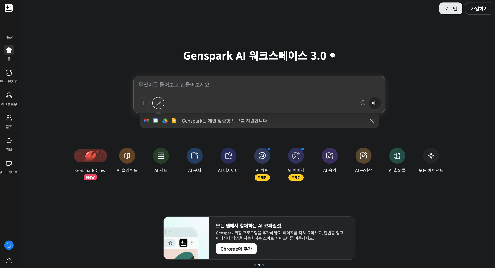
< Genspark 메인 페이지 >
Genspark는 하나의 플랫폼 안에서 AI가 자료 조사, 발표자료 제작, 이미지 생성, 영상 제작, 웹사이트 생성을 모두 처리해 주는 도구입니다. 따로따로 여러 도구를 쓸 필요 없이 Genspark 하나로 대부분의 콘텐츠 제작 작업을 해결할 수 있습니다. 매일 무료 크레딧 100개가 지급되어 기본적인 사용은 무료로 가능합니다.
 Manus
Manus
2026. 03. 20 · 작성자-ownuun
공식 사이트: https://manus.im
복잡한 작업을 지시하면 AI가 알아서 처음부터 끝까지 완성해 주는 자율형 AI 에이전트입니다.
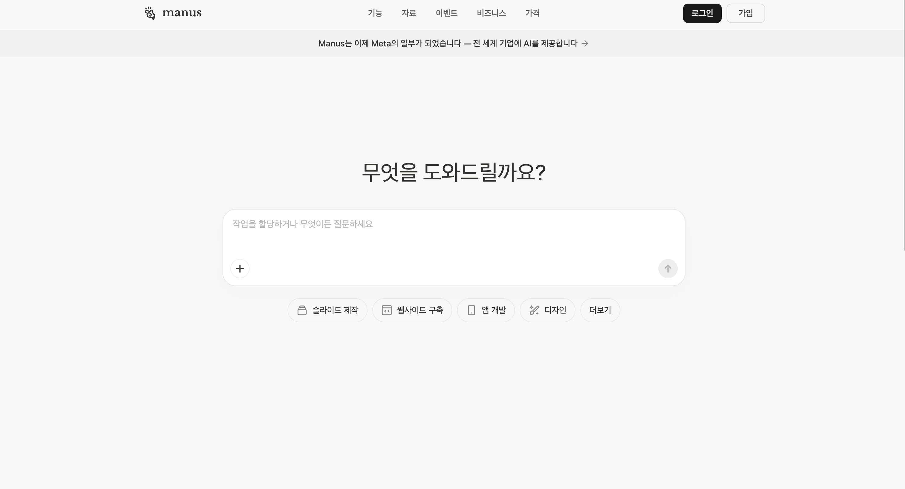
< Manus 메인 페이지 >
Manus는 단순히 질문에 답하는 AI가 아니라, 주어진 목표를 스스로 계획하고 실행하는 AI입니다. "이 주제로 보고서 만들어줘"라고 지시하면 직접 인터넷을 검색하고, 내용을 정리하고, 문서까지 완성해서 결과물을 건네줍니다. 코드 작성이나 데이터 분석처럼 복잡한 작업도 처리할 수 있어, 여러 단계가 필요한 작업을 한 번에 맡길 수 있습니다.
 Snapdeck
Snapdeck
2026. 03. 20 · 작성자-ownuun
공식 사이트: https://snapdeck.app
텍스트나 문서를 붙여넣으면 AI가 발표자료로 바꿔주는 슬라이드 제작 도구입니다.
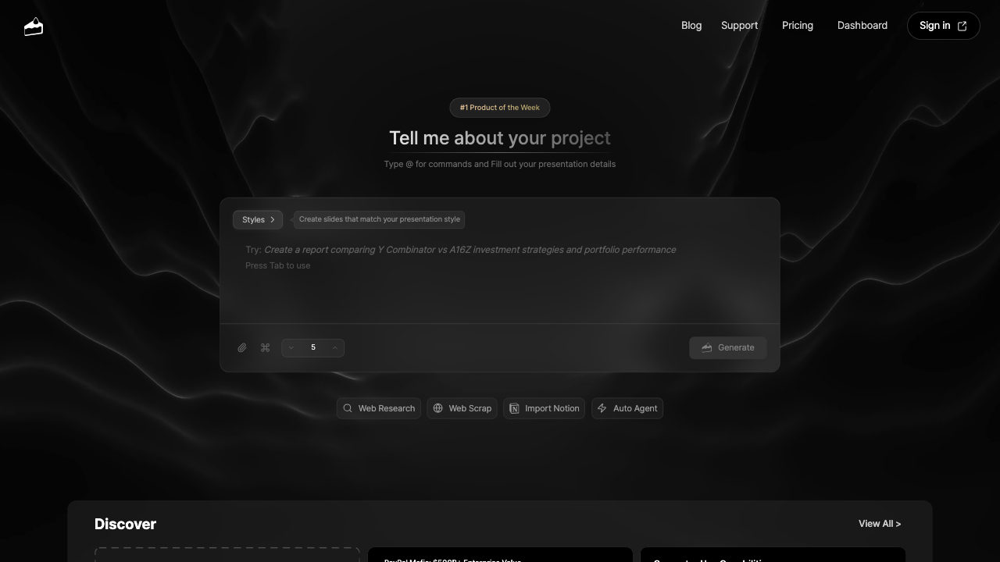
< Snapdeck 메인 페이지 >
Snapdeck은 내용만 입력하면 AI가 자동으로 슬라이드 구성을 잡고 디자인까지 완성해 주는 도구입니다. 직접 레이아웃을 잡거나 디자인을 고민할 필요 없이, 전달하고 싶은 내용에만 집중하면 됩니다. 발표자료를 빠르게 만들어야 할 때 특히 유용합니다.
 Gemini 나노바나나
Gemini 나노바나나
2026. 03. 20 · 작성자-ownuun
공식 사이트: https://gemini.google.com
Google Gemini 계열에서 활용하는 이미지 생성용 AI 도구입니다.
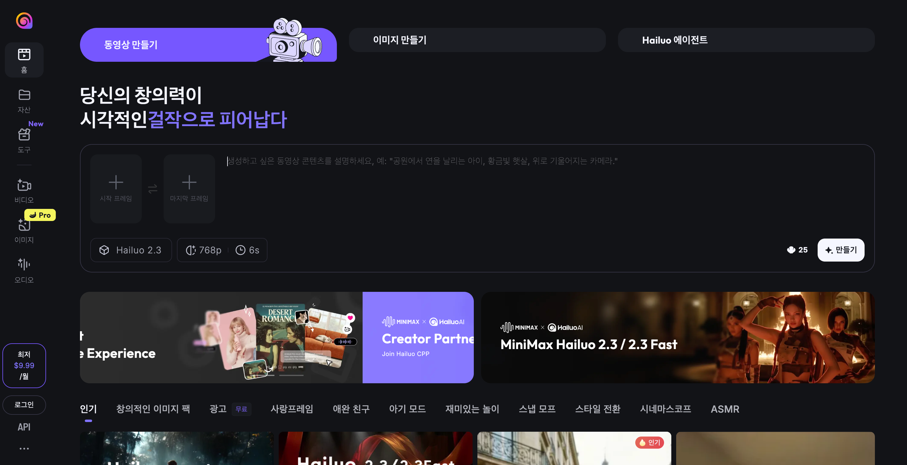
< 나노바나나 메인 페이지 >
Gemini 나노바나나는 Google Gemini 계열에서 활용하는 이미지 생성 도구로 이해하시면 됩니다. 원하는 장면이나 콘셉트를 글로 설명하면, 이를 바탕으로 시안 제작에 활용할 수 있는 이미지를 빠르게 만들어 줍니다. 포스터 배경, 썸네일 시안, 레퍼런스용 스타일 이미지를 테스트할 때 특히 유용합니다.
 Claude Code
Claude Code
2026. 03. 20 · 작성자-ownuun
공식 사이트: https://claude.ai/code
자연어로 지시하면 코드 작성, 파일 수정, 웹사이트 제작까지 처리해 주는 Anthropic의 AI 코딩 에이전트입니다.
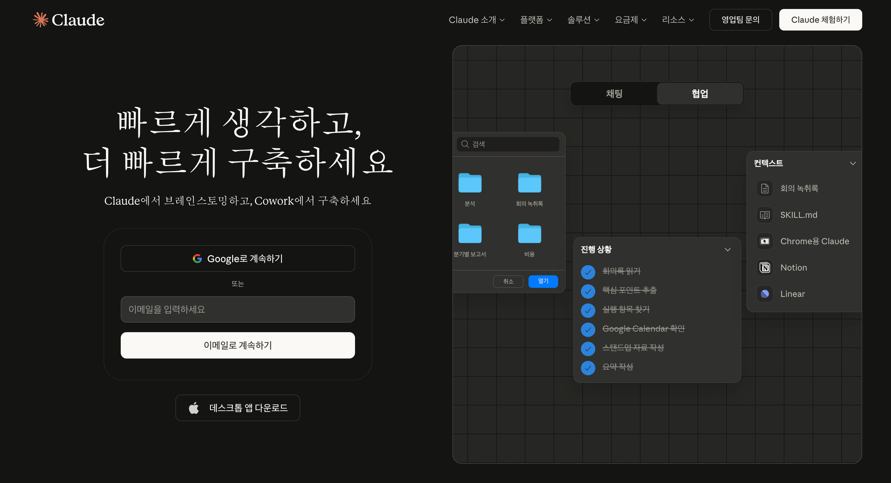
< Claude Code 메인 페이지 >
Claude Code는 터미널(명령 프롬프트)에서 실행하는 AI 도구로, 코딩 지식 없이도 "이런 웹사이트 만들어줘", "이 파일 수정해줘"처럼 말로 지시하면 AI가 직접 작업을 수행합니다. 단순한 코드 생성을 넘어 파일을 읽고, 수정하고, 실행까지 하는 에이전트 방식으로 동작합니다. 지금 보고 있는 이 사이트 자체도 Claude Code로 제작되었습니다.
 Canva
Canva
2026. 03. 20 · 작성자-ownuun
공식 사이트: https://www.canva.com
전 세계 1억 9천만 명이 쓰는 글로벌 1위 디자인 플랫폼입니다.
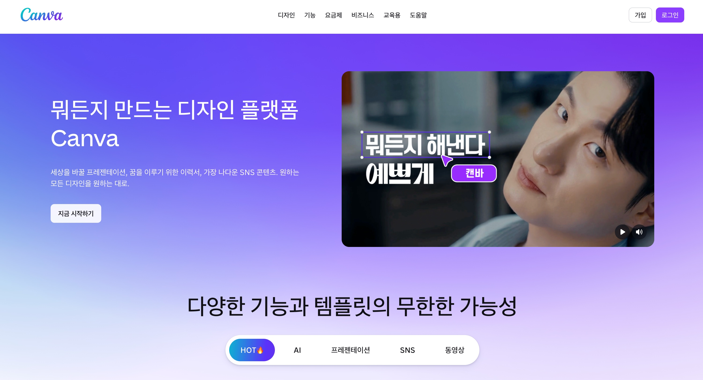
< Canva 메인 페이지 >
Canva는 디자인 전문 지식 없이도 포스터, PPT, 카드뉴스, SNS 콘텐츠 등을 쉽게 만들 수 있는 도구입니다. 수천 개의 템플릿 중 마음에 드는 것을 골라 텍스트와 이미지만 바꾸면 완성도 높은 결과물이 나옵니다. Magic Design 기능을 사용하면 프롬프트 한 줄만으로 AI가 디자인을 자동 생성해 주며, 기본 기능은 무료로 사용할 수 있습니다.
미리캔버스
2026. 03. 20 · 작성자-ownuun
공식 사이트: https://www.miricanvas.com
한국 트렌드와 한국어에 최적화된 국내 1위 디자인 플랫폼입니다.
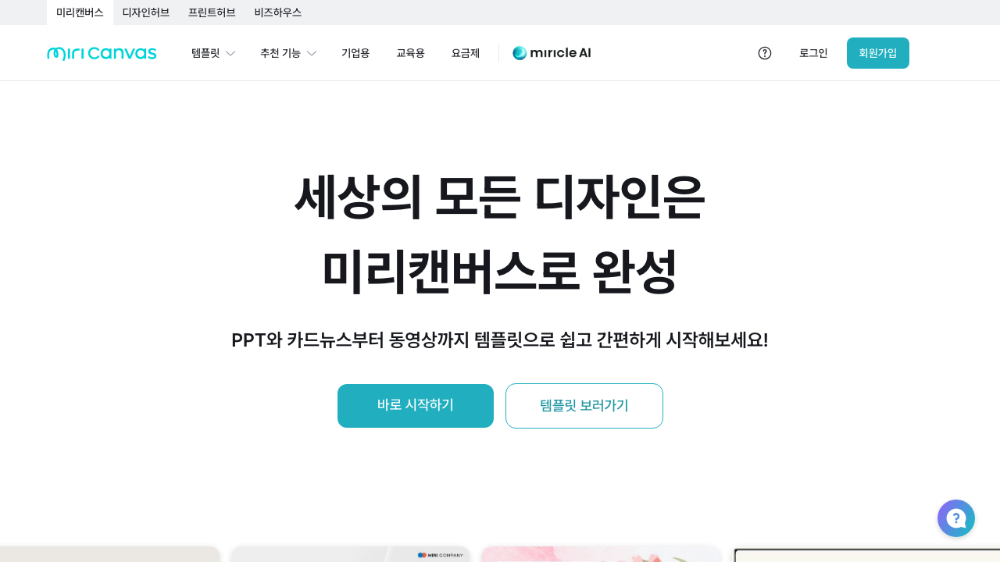
< 미리캔버스 메인 페이지 >
미리캔버스는 Canva와 비슷한 템플릿 기반 디자인 도구이지만, 한국 감성과 트렌드에 맞는 템플릿이 풍부하고 한국어 폰트와 레이아웃이 잘 갖춰져 있습니다. AI PPT 자동 생성, AI 이미지 생성, 배경 제거 기능을 모두 무료로 사용할 수 있습니다. 한국어 콘텐츠를 만들 때는 Canva보다 미리캔버스가 더 편리한 경우가 많습니다.
 Figma
Figma
2026. 03. 20 · 작성자-ownuun
공식 사이트: https://www.figma.com
UI/UX 디자인 업계에서 가장 널리 쓰이는 표준 디자인 도구입니다.
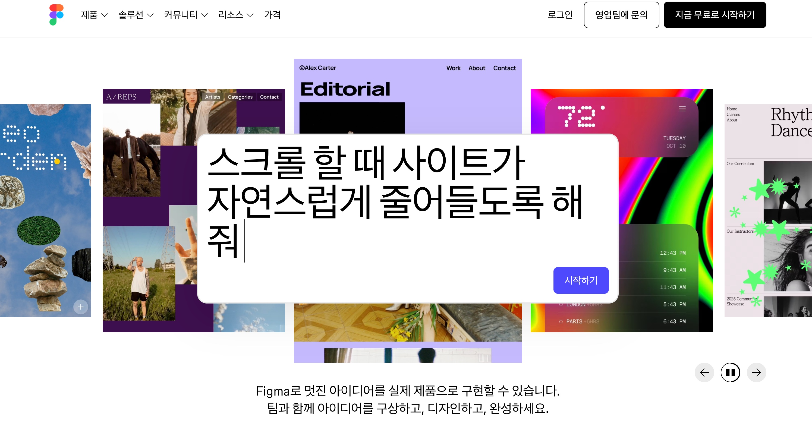
< Figma 메인 페이지 >
Figma는 앱이나 웹사이트의 화면을 설계하고 디자인하는 데 특화된 도구로, 전 세계 디자이너들이 실무에서 가장 많이 사용합니다. 여러 명이 동시에 같은 파일을 편집할 수 있는 실시간 협업 기능이 강점이며, 디자인한 화면이 실제로 어떻게 작동하는지 미리 보여주는 프로토타이핑 기능도 있습니다. 처음 배우는 데 시간이 조금 걸리지만, 무료 플랜으로 시작할 수 있고 익히면 가장 강력한 디자인 도구입니다.
Gamma
2026. 03. 20 · 작성자-ownuun
공식 사이트: https://gamma.app
프롬프트 한 줄로 60초 만에 완성된 발표자료를 만들어주는 AI 도구입니다.
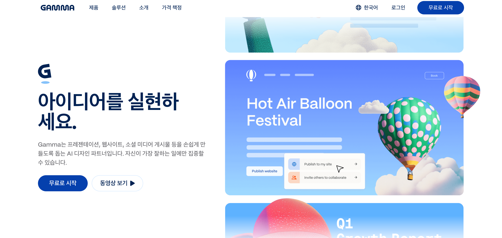
< Gamma 메인 페이지 >
Gamma는 주제나 내용을 입력하면 AI가 슬라이드 구성, 디자인, 텍스트를 모두 자동으로 완성해 주는 발표자료 생성 도구입니다. 완성된 자료는 PPT나 Google Slides 형식으로 내보낼 수 있어 기존 작업 방식과 연결하기도 쉽습니다. 한국어를 지원하며 무료로 400크레딧이 제공됩니다.
Ideogram
2026. 03. 20 · 작성자-ownuun
공식 사이트: https://ideogram.ai
텍스트가 포함된 이미지를 정확하게 만들어주는 AI 이미지 생성 도구입니다.
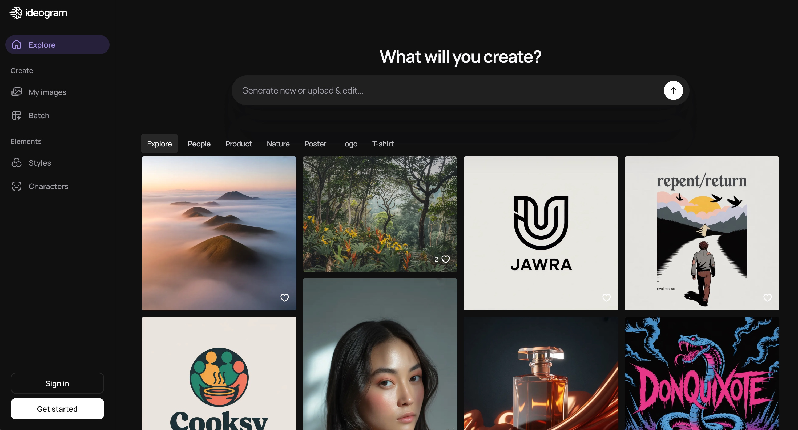
< Ideogram 메인 페이지 >
Ideogram은 원하는 이미지를 글로 설명하면 AI가 이미지를 생성해 주는 도구입니다. 다른 AI 이미지 도구들이 이미지 안에 글자를 넣으면 글자가 뭉개지거나 틀리게 나오는 문제가 있는 반면, Ideogram은 텍스트를 정확하게 표현하는 것이 강점입니다. 한글 텍스트 정확도도 업계 최고 수준이라 로고, 포스터, 배너 초안을 만들 때 특히 유용하며, 무료로 사용할 수 있습니다.
Pencil Dev
2026. 03. 20 · 작성자-ownuun
공식 사이트: https://pencil.dev
캔버스에서 디자인하면 실제 작동하는 코드로 자동 변환해 주는 AI 네이티브 디자인 도구입니다.
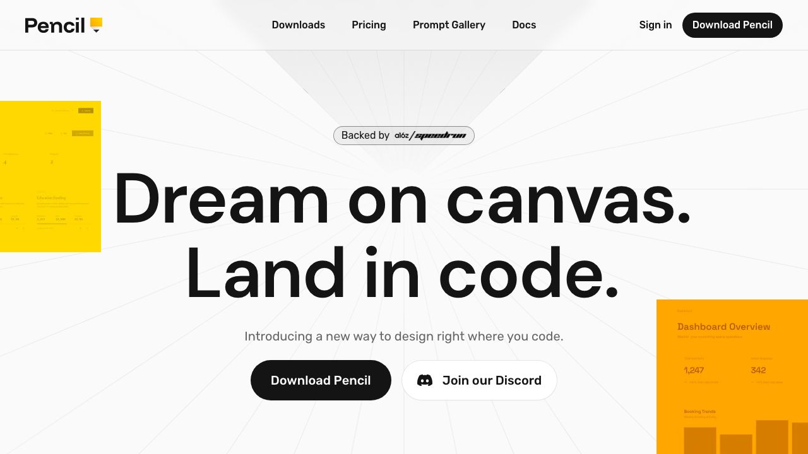
< Pencil Dev 메인 페이지 >
Pencil Dev는 디자인과 개발을 동시에 처리하는 도구로, 화면에서 직접 디자인하면 그 결과물이 실제 웹사이트에서 작동하는 코드(React, HTML)로 자동 변환됩니다. 디자이너가 따로 개발자에게 작업을 넘기지 않아도 되고, 코딩을 몰라도 실제로 작동하는 결과물을 만들 수 있습니다. Claude Code와 연동하면 AI가 디자인 작업까지 직접 수행할 수 있습니다.
 Pinterest
Pinterest
2026. 03. 20 · 작성자-ownuun
공식 사이트: https://www.pinterest.com
이미지 기반으로 디자인 레퍼런스를 검색하고 체계적으로 모아두는 플랫폼입니다.
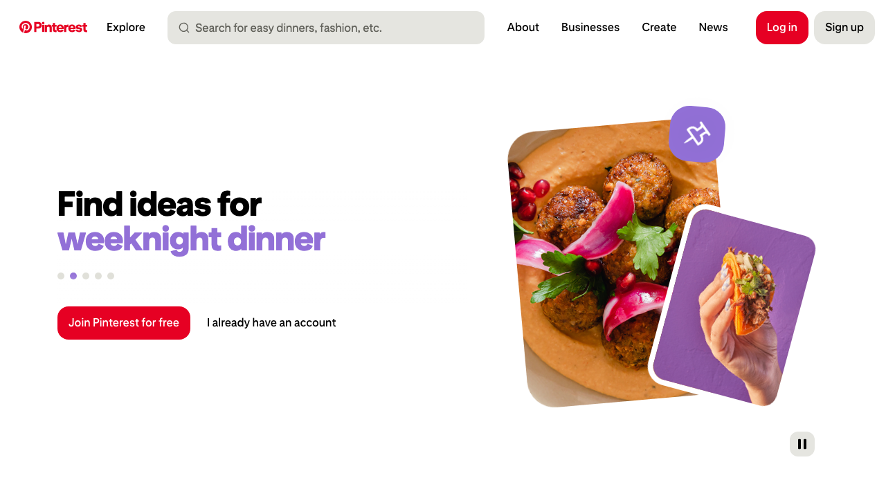
< Pinterest 메인 페이지 >
Pinterest는 전 세계 디자이너들이 영감을 얻기 위해 가장 많이 사용하는 이미지 수집 플랫폼입니다. 원하는 스타일이나 주제를 검색하면 관련 이미지가 쏟아지고, 마음에 드는 것을 보드에 저장해 레퍼런스를 정리할 수 있습니다. 디자인 작업을 시작하기 전 방향을 잡는 데 매우 유용하며, 무료로 사용할 수 있습니다.
개요
2026. 03. 20 · 작성자-ownuun
디자인 작업 시 참고할 수 있는 레퍼런스 사이트와 자료를 모아둔 섹션입니다. 영감이 필요하거나, 폰트/색상/로고 레퍼런스를 찾을 때 활용합니다.
카테고리별 레퍼런스 목록은 다음과 같습니다.
- 디자인 영감 사이트
- 폰트 레퍼런스
- 색상 레퍼런스
- 로고 레퍼런스
- 템플릿 모음
디자인 영감
2026. 03. 20 · 작성자-ownuun
준비 중입니다.
폰트 레퍼런스
2026. 03. 20 · 작성자-ownuun
준비 중입니다.
색상 레퍼런스
2026. 03. 20 · 작성자-ownuun
준비 중입니다.
로고 레퍼런스
2026. 03. 20 · 작성자-ownuun
로고 스타일을 잡을 때 참고하는 레퍼런스 모음입니다. 산세리프/세리프 로고 분위기부터 AI 로고 생성, 실제 포트폴리오 사례까지 함께 봅니다.
- LogoAI — AI 로고 생성 시안 참고
- Brandmark Templates — 브랜드마크 템플릿 레퍼런스
- Ideogram Logo Explore — AI 로고 생성 결과물 참고
- Behance Logofolio — 로고 포트폴리오 모음
- Behance Logo — 글로벌 로고 작업물
- Behance 로고 — 한글 검색용 로고 작업물
- Pinterest Sans Serif Logo — 고딕/산세리프 로고 참고
- Pinterest Serif Logo — 명조/세리프 로고 참고
- Fonts In Use — 실제 타이포 사용 사례 확인
템플릿 모음
2026. 03. 20 · 작성자-ownuun
준비 중입니다.
개요
2026. 03. 20 · 작성자-ownuun
앞서 소개한 도구들을 바탕으로 실제 결과물을 생성하는 방법을 안내합니다. 만들고 싶은 결과물이 있을 때, 해당 카테고리에 들어가면 어떤 도구를 어떻게 쓰면 되는지 확인할 수 있습니다.
제너레이팅 카테고리는 다음과 같습니다.
- PPT 제작
- 카드뉴스 제작
- 카드뉴스 자동화
- 포스터 / 배너
- 로고 디자인
- 랜딩페이지 제작
- 와이어프레임
- 바이브 코딩
PPT 제작
2026. 03. 20 · 작성자-ownuun
준비 중입니다.
카드뉴스 제작
2026. 03. 20 · 작성자-ownuun
준비 중입니다.
카드뉴스 자동화
2026. 03. 20 · 작성자-ownuun
준비 중입니다.
포스터 / 배너
2026. 03. 20 · 작성자-ownuun
준비 중입니다.
로고 디자인
2026. 03. 20 · 작성자-ownuun
로고를 빠르게 탐색하고 시안을 뽑아보는 작업 흐름을 정리한 섹션입니다.
로고 디자인은 무작정 그리기보다, 먼저 방향을 정하는 것이 중요합니다. 세리프 로고로 갈지, 산세리프 로고로 갈지, 심볼 중심으로 갈지, 워드마크 중심으로 갈지를 먼저 정하셔야 합니다. 방향을 잡은 뒤에는 Behance, Pinterest, Fonts In Use 같은 레퍼런스 사이트에서 분위기를 충분히 수집하고, 이후 아래 도구들로 빠르게 시안을 생성해볼 수 있습니다.
- Ideogram
- Brandmark
- LogoAI
- logo.com
- Genspark
- Gemini 나노바나나
핵심은 레퍼런스 → 방향 설정 → AI 시안 생성 → 피드백 → 정리 순서로 가는 것입니다. 처음부터 완성형 로고를 만들려고 하기보다, 다양한 시안을 빠르게 본 뒤 팀 안에서 가장 SPEC에 맞는 방향을 고르는 방식이 훨씬 효율적입니다. 특히 logo.com은 빠른 워드마크 탐색에, Genspark와 Gemini 나노바나나는 다양한 스타일 시안 탐색에 활용하기 좋습니다.
랜딩페이지 제작
2026. 03. 20 · 작성자-ownuun
준비 중입니다.
와이어프레임
2026. 03. 20 · 작성자-ownuun
준비 중입니다.
바이브 코딩
2026. 03. 20 · 작성자-ownuun
준비 중입니다.
1주차 — OT & 디자인 기초
강의 목표
- CRAP 원칙(대비, 반복, 정렬, 근접)을 이해하고 실제 디자인에서 찾아낼 수 있습니다.
- 색상 조합과 폰트 선택의 기본 기준을 학습합니다.
- 이미지 다루기 기초(누끼, 해상도)를 실습합니다.
시간 배분
| 시간 |
내용 |
| 0:00~0:10 |
아이스브레이킹 — 가장 못 만든 디자인 공유 |
| 0:10~0:30 |
Ch.0: 왜 디자인인가? (Before/After 퀴즈) |
| 0:30~0:50 |
Ch.1~2: CRAP 원칙 + 위계/구도 |
| 0:50~1:10 |
Ch.3~4: 색상 + 타이포그래피 (폰트 조합 실습) |
| 1:10~1:20 |
Ch.5: 이미지 다루기 (누끼 따기 데모) |
| 1:20~1:30 |
Q&A + 다음 시간 예고 |
과제
- 눈누(noonnu.cc)에서 무료 폰트 7종 다운받아 설치하기
- CRAP 원칙으로 인스타그램 포스터 1개 분석해보기
참고 자료
- 가이드: SPEC 디자인 개요 > 디자인 기초
- YouTube: "17년차 디자인 업계인이 풀어주는 암묵적 룰"
2주차 — 준비 중
해당 주차의 챌린지는 준비 중입니다.
3주차 — 준비 중
해당 주차의 챌린지는 준비 중입니다.
4주차 — 준비 중
해당 주차의 챌린지는 준비 중입니다.
5주차 — 준비 중
해당 주차의 챌린지는 준비 중입니다.
6주차 — 준비 중
해당 주차의 챌린지는 준비 중입니다.
7주차 — 준비 중
해당 주차의 챌린지는 준비 중입니다.
8주차 — 준비 중
해당 주차의 챌린지는 준비 중입니다.
9주차 — 준비 중
해당 주차의 챌린지는 준비 중입니다.
10주차 — 준비 중
해당 주차의 챌린지는 준비 중입니다.
11주차 — 준비 중
해당 주차의 챌린지는 준비 중입니다.
12주차 — 준비 중
해당 주차의 챌린지는 준비 중입니다.
13주차 — 준비 중
해당 주차의 챌린지는 준비 중입니다.
14주차 — 준비 중
해당 주차의 챌린지는 준비 중입니다.
15주차 — 준비 중
해당 주차의 챌린지는 준비 중입니다.
16주차 — 준비 중
해당 주차의 챌린지는 준비 중입니다.